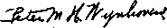

A JOURNAL OF FACT HOPE AND COURAGE
iiiiimiimiimiiiiiimiimiiiiiiiiiimiiiiiiiiimiiiiiiiiiiiiiiiiiiiiiii
in this issue
PROCESS SERVERS OF THE GREAT JUDGE
THE PERFECTION OF CUSSEDNESS
EXPOSED
PETITION FOR AN END OF RELIGIOUS PERSECUTION IN GEORGIA
RESTORE FREEDOM OF WORSHIP IN MASSACHUSETTS
FATHER, SON, AND HOLY SPIRIT
iiiiiiiiiiiiiiiiiiiiiiiiiiimiimiiiiiiiiiimiiiimtmiiiimiiimiiiiiiii
every other WEDNESDAY five cents a copy one dollar a year Canada & Foreign 1.25
Vol. XVIII-No. 461 May 19, 1937
Ou*
CONTENTS
Jehovah’s witnesses—Ambassa-dors for God and His King— Process Servers of the Great Judge—Announcing that Jehovah’s Kingdom Is Here 515
Disorderly to Criticize Hypocrites 516 Witnesses Bestir Themselves
Prohibiting Attack on Race or
Scourging Patriotism into
Hierarchy Has a Definite Program to Control America
Legislative Action Is Imperative 521
Time to Quit Jailing Christians 521 The Perfection of Cussedness 522 Copy of Another Interesting
and Instructive Document 523
Striving to Return to Dark Ages 527 Massachusetts Apes Hitler
Resolution Passed by Public
Affairs Committee of the Federation of Social Agencies of Allegheny County,
Cloven-Hoofed Correspondence 528
■ ■ ——
When Judges Are Honest 530
Plain Speech to Judge Hartshorne 531
Nutley Gets Its Pound of Flesh 532 Petition for an End of Religious
Persecution in Georgia 533
Who Are Jehovah’s witnesses? 533
Why Do They Engage in
Their Work Is the Scriptural
Opposition to the Work of
Pastor Protests Lagrange Arrests 535 Georgia Ku Klux Klan Very Proud 535 Restore Freedom of Worship
Savage Results of Forced
Position of Jehovah’s witnesses 537
Inconsistent Position of the
Massachusetts: There She Stands 537
Ulterior Motive Back of the Law 538
Father, Son, and Holy Spirit 539 “Jehovah” Prominent in
-------———----
Published every other Wednesday by
GOLDEN AGE PUBLISHING COMPANY, INC.
117 Adams Street, Brooklyn,. N. Y„ U.S.A.
Clayton J. Woodworth President Nathan H. Knorr Tice President
Charles E. Wagner ’Secretary and Treasurer
FIVE CENTS A COPY
$1 a year, United States; $1.25 to Canada and all other countries.
Notice to Subscribers
Remittances : For your own safety, remit by postal or express money order. When coin or currency is lost in the ordinary mails, there is no redress. Remittances from countries other than those named below may be made to the Brooklyn office, but only by intbknational postal money order.
Receipt of a new or renewal subscription will be acknowledged only when requested. Notice of expiration is sent with the journal one month before subscription expires. Please renew promptly to avoid loss of copies.
Send change of address direct to us rather than to the post office. Your request should reach us at least two weeks before the date of issue with which it Is to take effect. Send your old as well as the new address. Copies will not be forwarded by the post office to your new address unless extra postage is provided by you.
Published also in Bohemian, Danish, Dutch, Finnish, French, German, Greek, Japanese, Norwegian, Polish, Spanish, Swedish.
Offices fob Otheb Countries
British 34 Craven Terrace, London, W. 2, England
Canadian 40 Irwin Avenue, Toronto 5. Ontario, Canada
Australasian 7 Beresford Road, Strathfield, N. S. W., Australia
South African Boston House, Cape Town, South Africa
Enteree as second-class matter at Brooklyn, N. Y., under the Act of March 3, 1879.
Volume XVIII Brooklyn, N.Y., Wednesday, May 19, 1937 Number 461
(Part 1)
(A brief account of some experiences of true Christians in various parts of the United States, Canada, Germany, Italy, Rumania, South Africa, Syria, Palestine, Egypt and other lands in [and as a consequence of] their fearless and thrilling denunciations of the clergy of the Devil, the politicians of the Devil, and the financiers of the Devil, beginning with the great Keystone State of Pennsylvania, U.S.A.)
Woe unto you, scribes and Pharisees, hypocrites! for ye are like unto whited sepulchres, which indeed appear beautiful outward, but are within full of dead men’s bones, and of all uncleanness. Ye serpents, ye generation of vipers! how can ye escape the damnation of hell?— Matthew 23:27,33.
These words constitute an attack on the preachers of nineteen centuries ago. The tendency of this language would be to create hostility and hatred of such preachers because of their religion. It would make them appear ridiculous in the minds of the honest. There are
free speech and free press for many years. People have been able to freely speak, write and print on any subject, and have been greatly benefited thereby. But now a program is under way to choke off these liberties and control the people in medieval inquisitional style. The padlocks on free speech in the shape of proposed legislation are ready. The laws have been introduced, and if the General Assembly of the Commonwealth will follow the bidding of these enemies of liberty the people will soon know what it is
plenty of the clerical group of today just as crooked and hypocritical as those of Jesus’ day. Yet if Jesus came back to earth in person and in the Commonwealth of Pennsylvania should utter such condemnation of the religious crooks He would come within the purview of proposed legislation of the Commonwealth which would subject Him to imprisonment and fine.
Pennsylvania has enjoyed the blessings of like to live in the Hitleristic mode.
Examine this 1937 style of muzzle of free speech. Here is Bill Number 164 introduced by Mr. Elpern, of Westmoreland County.
“It shall be unlawful for any person to print or disseminate or distribute or cause to be printed or disseminated or distributed within this Commonwealth any writing, pamphlet, printing, cut, cartoon or utterance which shall contain any attack on any race or religion, or which shall tend to produce violence or riot or incite any person to commit any overt act or to do or attempt to do any personal injury or harm to another. Any person violating any of the provisions of this atet shall be guilty of a misdemeanor and upon conviction thereof shall be sentenced to pay a fine of one hundred dollars and to suffer imprisonment for sixty days.”
Evidently Mr. Elpern was dubious about his bill and later introduced Number 1875, which is similar and makes it unlawful to print, disseminate or distribute printed matter which “shall in language or otherwise urge, create or tend to create hatred, ridicule, violence or hostility against any group or persons resident in the State because of their race, color or religion”.
But this was not sufficient. The boys, or girls, or both, who are back of this movement to guillotine the people’s liberties had Messrs. David Weiss and Samuel Weiss introduce No. 1611 to the General Assembly, which would make it a misdemeanor to print, disseminate or distribute printed matter, cartoons, etc., “containing any malicious attack on any race or religion . . . and which would tend to produce harm or violence”.
Why All the Sudden Concern?
Why all this sudden concern over protection of religion, race or color? Why is there such great desire to jail and fine people who criticize some religious outfit at this day? What emergency is there that would impel the surrender of fundamental liberties of freedom of speech and press in order to protect (?) religion, race or color?
It was the scathing truths uttered by Jesus against the religious hypocrites of His day that impelled them to crucify Him. Priests and clergy of today who fatten on the ignorance of the people, fearing the exposure of their iniquities, would make Pennsylvania safe for hypocrisy by the insertion of gag laws in the statute books.
By way of illustration: The Roman Catholic clergymen teach that many of the dead go to a place called “purgatory”, and that their sufferings can be eased and terminated through payment of money by their friends and relatives to the priests for masses in their behalf. The “purgatory” theory is false, and the securing of money for the “release of souls” in “purgatory” is clearly the case of securing money under false pretenses. It constitutes a graft and a racket by religious leaders. Presenting the truth on the “purgatory” matter to the people arouses hostility to priests. It creates enmity against them by people who have been hoodwinked. If these measures are enacted into law one could be fined one hundred dollars and jailed for sixty days for telling the people the truth on the subject. And that is the reason why these bills are presented to the legislature. The religious leaders cannot justify their false position, and therefore they would stifle criticism by legislative enactment.
Disorderly to Criticize Hypocrites
In Millvale, Pennsylvania, recently one of Jehovah’s witnesses presented to residents of the village some books which contained Bible proofs that Catholic teachings are not true. He was arrested. A priest by the name of Fabre appeared at the trial to assist in jailing the defendant. The priest claimed that it was disorderly conduct to call at a house and present a book which criticized the Catholic church or its priests. The court did not agree with him and the prisoner was released. At many other places the priests have instigated “disorderly conduct” charges against Christian people for presenting Bible truths to them. The courts will not uphold them on such charges, and therefore they come to the legislature to make the way easier for them.
And wouldn’t they be in fine shape with these nice bills made into law? Their way would be made smooth. The circulation of any printed matter criticizing the Catholic church, no matter how truthful the matter was, would be cause for jailing someone. The priests could wail: “We are attacked. This is malicious. They are arousing enmity and hostility against us.” Give the Catholic machine this kind of equipment, and in due course judges and police officials of the state will be turned into pontifical inquisitors to hunt up “heretics” and jail them. Liberty of speech, press and conscience wilj be choked, gagged, throttled, padlocked and suppressed while that foreign power takes over control of the Commonwealth.
Pennsylvania Witnesses Bestir Themselves
Such things as happened at Millvale get under the hide of true Christians, especially if they are true Americans, and not lickspittle toe-kissers. And so the witnesses of that state, by C. R. Hessler, of 907 Middle St., Pittsburgh, ad-
dressed a memorandum to the Members of the General Assembly of the Commonwealth of Pennsylvania, entitled “The Gag on Freedom of Speech, Freedom of Worship, Freedom of Conscience”, which reads as follows:
In the interests of preservation of the civic rights and liberties of the people of this Commonwealth your attention is called to the following quotations from the Constitution of this State, and to the statement of facts in connection therewith.
ART. I, SEC. 3. “All men have a natural and indefeasible right to worship Almighty God according to the dictates of their own consciences; ... no human authority can, in any case whatever, control or interfere with the rights of conscience; and no preference shall ever be given, by law, to any religious establishments or modes of worship.”
ART. I, SEC. 7. . . The free communication of thoughts
and opinions is one of the invaluable rights of man; and every citizen may freely speak, write and print on any subject, being responsible for the abuse of that liberty. ...”
Pennsylvania was one of the leaders in blazing the way for complete religious liberty in America. Its constitutional declaration means that one has the right to believe what he pleases, and act in accordance with that belief, provided he does not violate the laws of morality or property or infringe on personal rights. He has the right to disseminate such beliefs, even though they may conflict with the beliefs of others or attack the creeds of others. With a couple of centuries of history behind it in favor of complete freedom of worship it would be indeed unfortunate if this Commonwealth should reverse its position and follow the pathway of Germany, Italy and other benighted areas of Europe.
For, be it known unto you, members of the General Assembly of Pennsylvania, there is a present and immediate danger of loss of your civic and religious liberties. Religious intolerance has reared its ugly head and is proceeding to take over the Commonwealth. A powerful religio-political organization is quietly and insidiously working to gain control, not only of Pennsylvania, but of the United States and of the entire world. It instigated and supports the rebellion against Spain that it may rule that country. It controls some countries of Europe, notably Germany, Austria and Italy. And now it covets wealthy and free America. It would grab control of the entire country and suppress all information of its interest and activities while the process is going on. The foreign power which would thus take control is the Roman Catholic Hierarchy. By this we do not mean the honest-hearted people who make up what is called “the Catholic population”. We do refer to the ruling body which is the Catholic Church and which directs its activities. That organization is not only religious, but political, and its subversive activities are being manifested in all places.
Prohibiting Attacks on Race or Religion
House of Representatives Bill No. 164 is a measure which, if passed, will be very useful to this great religious corporation. This bill would make it unlawful to print, disseminate or distribute, or cause to be printed, disseminated or distributed, any writing, pamphlet, printing, cut, cartoon or utterance that would contain an attack on any race or religion, or that might make someone angry enough to start a riot or commit some overt act.
On the surface this measure looks like a noble-hearted attempt to protect religious and racial groups from slanderous and scurrilous attacks. But it goes much further. An attack would mean any criticism of any church, doctrine, creed, or organization. It would open the door for a powerful religious organization, working with political groups, to grab control of governmental forces and be safe from criticism or exposure while so doing.
Genesis of the Bill
This measure originated in Monessen, Pennsylvania. One James C. Gold is mayor of this town and for some months there has been controversy between him and Jehovah’s witnesses.
Jehovah’s witnesses are Christians who preach the gospel to the people by calling on them at their homes. The Roman Catholic Hierarchy has carried on a vicious campaign to destroy the work of these people. The reason for its opposition is that Jehovah’s witnesses have exposed to view the false teachings of that organization and its wrongful actions.
Early in 1936 Jehovah’s witnesses established a private school in Monessen. This school was operated in accordance with the laws of Pennsylvania governing such. In due course of time Mayor Gold discovered its presence. He claimed it was Communistic, and sent the police chief to close the school. The chief of police closed the school, arrested and incarcerated the teacher, and took away the Bible, two American flags, and a book called The Harp of God as ‘evidence of its Communistic character’. No charges were preferred against the teacher, but he was held two days incommunicado and released. The school was opened again, but was padlocked by the police, until the court issued an injunction restraining the mayor and police from interfering with it.
On May 24, 1936, a number of Jehovah’s witnesses called on the people in Monessen with a petition against the unlawful acts of Monessen officials in closing this private school. Mayor Gold sent his officers forth, and arrested 146 of these Christian people and jammed them into prison cells. The next morning, without any semblance of a trial, and with absolutely no evidence of wrongdoing against any of them, he found them all “guilty of disorderly conduct” and fined them five dollars each. Jehovah’s witnesses in turn exposed these unlawful and malicious acts by publishing the facts and presenting them to the citizens of the community. Later, when they were engaged in regular work of calling on the people with their Biblical message Gold caused 41 of them to be arrested and sentenced to various terms in the county jail. Appeals were taken on most of these cases to the Quarter Sessions Court of Westmoreland County and the convictions were reversed. In that decision the judge of the Quarter Sessions Court held in effect that the work of calling on the people to tell about the Bible did not constitute disorderly conduct, and that it was not disorderly conduct to disseminate among the people literature exposing and criticizing the unlawful and malicious acts of the mayor, his police officers, and his ecclesiastical associates.
Now this religious and political copartnership of Monessen comes to you with a request to enact a law which will enable them to throw Jehovah’s witnesses into jail and keep them there for sixty days at a stretch. It is the priests of Monessen, with their righthand associate, Mayor James C. Gold, that are sponsoring Bill No. 164. It is not designed to protect religious groups. On the contrary, it is designed to give a bunch of priest-led politicians the opportunity to throw their critics into jail. It is aimed primarily at Jehovah’s witnesses. It might just as well have the name Jehovah’s witnesses blazoned across the front of it. It will be used not only against Jehovah’s witnesses, but against all who interfere with the program of the Roman Catholic Hierarchy to control and operate all things in its own behalf. If this measure becomes a law there will be no more free communication of thoughts and opinions. There will be no more free speaking and writing on all subjects. Freedom of conscience will be kicked into a condition of innocuous desuetude, and dictatorial, intolerant methods will prevail. Any newspaper that criticizes a preacher’s sermon would do well to count the cost before going to press. Any bookdealer must needs examine the contents of his wares closely before putting them on sale. For instance, he would have to eliminate some of the writings of the beloved Mark Twain from his stock. Any librarian would of necessity have to remove some of Shakespeare’s works from the shelf in order to protect herself from a hundred-dollar fine and a sixtyday jail sentence. And what a wholesale gathering-in there could be of newsboys, news agents and newspaper publishers who publish the facts concerning the part the Roman Catholic Hierarchy now plays in the affairs of Spain, Germany, and other European countries.
A dictatorship cannot be established in this country unless the honest lovers of .liberty are gagged and muzzled while the work is in progress. Europe is a shining example of gag rule where church and state work together. Duplicity and covert action is not needed there. The dictator makes the rule, and woe be unto him who says anything against it. In America, where freedom of religion and freedom of press and speech have abounded these many years, the more subtle and crafty methods, exemplified in this measure, have to be used. If the General Assembly of Pennsylvania enacts this measure (Bill No. 164) into a law the people will in due time find themselves in a trap and their freedom gone like the wind.
Other Attempts at Gag Rule in Pennsylvania
In spite of constitutional guarantees, there has been much interference with religious freedom and freedom of speech in the Commonwealth of Pennsylvania during the past year. Here 440 Christian people have been arrested, in various parts of the State, whose only “offense” has been that they have busied themselves carrying to the people the gospel message as contained in the Bible. They have been assaulted and beaten by mobs. They have been railroaded to jail without the faintest semblance of a legally conducted trial. Priests have conspired and schemed with mayors, police and judges to keep them from carrying the message of truth to the people. Children have been tortured in medieval style. Boycott threats have been made. Special legislation against them has been proposed and enacted. Police and courts have acted without regard to law or order to carry out the wishes of the ecclesiastical powers.
These are not rash and reckless statements. Proof can and will be presented of every one of the above charges at such time and place as the General Assembly may desire. We demand an investigation of the intolerant and malicious acts that have been carried on against Jehovah’s witnesses, in order that subversive influence may be completely exposed and the people’s rights protected.
We cite a few specific instances for your information.
Monessen, in whose dark and murky depths this mischief-framing legislation has come to birth, has been mentioned. Only a small part of the story has been told. At the instigation of priestly powers there has been a denial of the right of freedom of worship, freedom of petition, freedom of speech, equal rights, and taking of property without due process of law. “Your presence in this town constitutes disorderly conduct,” was the dictum of the miniature Hitler that bosses this burg. Because the presence of Jehovah’s witnesses disturbs the peace of the mayor and shocks the susceptibilities of his priestly partners, 188 of Jehovah’s witnesses suffered unlawful arrests and imprisonment during the past year. The full story of the operation of this inquisition in Monessen should be unfolded before a committee of this General Assembly.
New Philadelphia is another community where liberty has been overshadowed by ecclesiastical rule. On some date prior to July 12, 1936, the Catholic priests of the city warned the members of their churches against Jehovah’s witnesses and directed the officials of the city to run them out of town when they called. On July 12, a group gathered at New Philadelphia for the purpose of calling upon the people to present to them the Bible message. In addition to house-to-house missionaries, they had with them three cars with sound equipment thereon for the purpose of presenting short Bible lectures and musical programs. Two representatives called on the burgess, who is also chief of police, to present him a letter identifying themselves, and explaining the purpose of their mission. The burgess refused to accept the letter.
In a few minutes after their arrival the town was in an uproar. Jehovah’s witnesses were assaulted and beaten; their literature torn up and scattered through the streets; and their cars and sound equipment damaged. The police made no effort to prevent the malicious and unlawful acts of the mob, but cooperated with them and encouraged them to make further depredations. Forty-four of Jehovah’s witnesses were arrested without warrant or cause and thrown into prison. Thirty-six of them were released later in the day, and the other eight were charged with “disorderly conduct” and held for trial.
At the trials not one single item of evidence was presented showing any of the defendants guilty of disorderly conduct. The officers admitted they were orderly and well-behaved. The only reason given for the arrests was that the chief of police had previously ordered them to stay out of town and that the people did not want them in town. This same chief admitted that the priests had ordered them to run Jehovah’s witnesses out of town. All but one of the defendants were “found guilty” and fined five dollars each. These convictions were reversed on appeal.
This is how church and municipality united suppresses freedom of worship and speech in the Stygian darkness of New Philadelphia. Is it desirable that the entire Commonwealth be submerged in similar blackness by means of the proposed measure?
Mauch Chunk has disgraced itself to the extent of incarcerating 30 persons for the “offense” of preaching the gospel in the community at various times during the year. The police admitted that the clergy had instigated the arrests.
Aliquippa has at least one policeman who realizes that for his own welfare it wouldn’t be proper to arrest a Christian just because a priest asked him to. He was heard to advise some complainant over the telephone concerning Jehovah’s witnesses, “The next time they come, try to antagonize them, so that they will use hostile language, and then we can hold them for disorderly conduct.”
Locust Gap. A Catholic priest came up to one of Jehovah’s witnesses, who was lawfully and orderly presenting a Biblical lecture by means of sound equipment, and ordered him to leave town, saying that he was pastor there. Encouraged by this priestly action a mob thereupon attacked the operator of the equipment, damaged his machine, and forced him to leave the town.
Coatesville is an illustration of the extent to which a church and state partnership will go in its campaign to suppress freedom of speech and freedom of worship. It is not a great and burning zeal for enforcement of law and upholding of the due process of law and order that actuates them. On the contrary, it is a rabid and overheated desire to suppress, censor and prohibit the dissemination of truths which shock the susceptibilities of the clerics of the community. Coatesville tried about everything they could think of to keep Jehovah’s witnesses out of town. Its mayor announced the official mandate that “Jehovah’s witnesses must stay out of town”. A “holy gestapo” was put in action to carry out the decree. Jehovah’s witnesses have been arrested in mass lots. They have been charged with violation of peddling ordinances. Charged with disorderly conduct. A State law regulating soliciting of contributions was invoked against them. Finally they passed an ordinance specially aimed at them, forbidding the distribution of handbills and printed matter. Were it not for the fact that the upper courts of Pennsylvania are still upholding law and order, religious freedom would be as extinct as the long-tailed dinosaur, in Coatesville. We have no doubt that the church and state copartnership in Coatesville will rejoice greatly if Bill No. 164 becomes a law.
Many other communities have joined in this hue and cry against Christian people. Time and space will not permit the listing of all of the wicked and unlawful acts perpetrated in the efforts to suppress freedom of worship and freedom of speech in the State. We present to you the roll of dishonor for the year, showing the communities and the number taken into custody in each place:
|
Alden |
10 |
Coatesville |
4 |
|
McAdoo |
22 |
Greencastle |
2 |
|
Uniontown |
2 |
West Hazleton |
14 |
|
Norwood |
15 |
Scranton |
12 |
|
North Belle Vernon |
45 |
Wilkes-Barre |
1 |
|
Monessen |
188 |
Brookville |
1 |
|
Washington |
3 |
Brownsville |
7 |
|
Bloomsburg |
10 |
Belle Vernon |
14 |
|
Mauch Chunk |
30 |
Lehighton |
12 |
|
Ambridge |
1 |
New Philadelphia |
44 |
Scourging Patriotism into Children
In Germany and Italy the population does homage to their pontifex maximus by the salute and “Heil Hitler” or “Viva il Duce”. This is compulsory upon all. Yes, exceedingly so. The one who for conscientious reasons, or for any reason, refuses to render obeisance to the nation’s ruler is sent to prison or concentration camp and tortured in regular Inquisition style.
The United States is being worked up to it through the compulsory flag salute, teacher's oath, and other forms of regimentation by law. The Commonwealth of Pennsylvania is well up in front in this form of inquisition. Approximately one hundred children have been expelled from the public schools of Pennsylvania because they conscientiously refused to salute the flag. And yet the Constitution of this State prescribes that “no human authority can, in any ease whatever, control or interfere with the rights of conscience”. These children are not disloyal. They are not enemies of the country, and are not trying to destroy it. They merely hold to the well-established principle recognized by the courts, that where there is a conflict between the law of God and the law of man, they must obey the law of God. For such adherence to principle they not only have been expelled from school but have been beaten, choked, taunted and jeered at, sent home from school with black-and-blue marks of beatings and welts on their backs, discriminated against, called names, and ostracized in fashion that is a disgrace to any place calling itself civilized.
The Supreme Court of the United States has solemnly decreed that “this is a Christian nation” (Church vs. U.S., 143 U.S. 457). Can the Commonwealth of Pennsylvania be said to be acting in accordance with such decree if it authorizes such barbarous treatment upon children because they are earnestly endeavoring to follow and practice the dictates of Christianity ?
Hierarchy Has a Definite Program
to Control America
Many honest members of the Catholic population, and many Protestants, doubt if the Hierarchy is a political institution and has a program to capture this country. Alfred E. Smith while campaigning for president made this statement: “I believe in the American doctrine of the absolute separation of church and state.” This has been called “Smith’s Credo”. In due course of time Pope Pius XI issued an encyclical “Casti Connubii” overruling “Smith’s Credo” as being contrary to established Catholic doctrine. We quote from the “Casti Connubii”:
“This [the Vatican-Mussolini pact] might well be a striking example to all of how even in this our day, in which, sad to say, the absolute separation of the civil power from the Church, and indeed from every religion, is so often taught, the one supreme authority can be united and associated with the other without detriment to the rights and supreme power of either, thus protecting Christian parents from pernicious evils and menacing ruin.”
Dr. E. Boyd Barrett, for twenty years a Jesuit priest, in his book Rome Stoops to Conquer, states very clearly and concisely its program for this country. We quote from pages 265-267:
“Who can place a limit to the Catholic objective in this country! Be-open diplomatic relations with Borne! Though gratified by such a concession, why should Catholics be content with that! Accord to them the exclusive right of censorship over books, plays, amusements and the press! The Church would accept such office without giving, thanks for it; for she would regard it as her exclusive right to enjoy it. Amend the Constitution so as to allow State Legislatures to apportion public moneys to the support of Catholic schools and institutions! The Church would grudgingly admit that a long-delayed obligation was being met by the country. Go further and amend the Constitution so as to recognize the jurisdiction of her Ecclesiastical Courts and establish the Catholic Church as the official church of America! At this point the church would begin to relax and smile with eOntent. But still she would demand more and more of us. She would have charge of the departments of philosophy and history in all our universities; she would have large sections of her Canon Law incorporated into tho State Laws; she would insist on being empowered to exercise certain essential inquisitorial rights . . . not, of course, Torquemada stuff . . . but a modernized and civilized Holy O.G.P.U. She would not ask for any measures to be taken against Protestants so long as they did not criticise her or cross her path or encourage Freemasonry or officially endorse eugenics and birth control. Protestant sects would be tolerated and treated in a kindly way subject to what she would consider necessary and reasonable restrictions.’1
House of Representatives Bill No. 164 would be of great aid to the Hierarchy in carrying out its program. She is religious, and any criticism or exposure of her aims, purposes and devices would be construed as an attack on. religion. The person who thus served his country would find himself in the toils of the law, subject to a fine of one hundred dollars and imprisonment of sixty days. The press, the pulpit, and all public-spirited citizens would be gagged and muzzled just as they are throttled and choked in European countries today.
Remedies
We recommend the following as some measures which you have the opportunity to take to remedy the situation disclosed:
I. Defeat House of Representatives Bill No. 164.
It is a vicious attempt to suppress freedom of speech and of- the press in defiance of Constitutional guarantees. No person who has any belief in preserving the Bill of Rights should for one minute support the measure. If you feel that out of consideration for the priests of Monessen the bill should be passed, then amend it and make it complete. Prohibit all people from making any attacks or criticisms of fraternal orders, political parties and clubs, women’s clubs, professional associations, World War veterans, luncheon clubs, associations of commerce, and individuals. Protect every one. Keep them all safe from criticism or attack. Make the Commonwealth safe for taciturnity.
II. Investigate Infringements of
Religious Freedom.
A.mere skeleton of the encroachments on freedom of worship, freedom of conscience, freedom of the press and speech, is presented in this statement. We stand ready and are willing to produce an abundance of evidence showing the subversive attempts to suppress civic rights. A committee of investigation should be appointed. Open hearings should be held and the entire matter thoroughly probed.
III. Prohibit Compulsory Flag-Saluting.
Children have “rights of conscience” guaranteed to them under the Constitution, the same as adults. Brutal attempts to force a child to salute a flag, when such child conscientiously believes the salute to be a violation of God’s law, will not foster patriotism and love of country in the heart of the child. It will either teach hypocrisy or induce a sullen resentment against the government that so abuses one who obeys the law of Almighty God. A measure should be passed by this General Assembly prohibiting the governing body of any school district from requiring the flag salute of any child who has conscientious objections thereto.
IV. Limit Power of Municipalities to Infringe on Religious Freedom.
Under priestly dictation the authorities of boroughs, cities and villages are prone to apply commercial ordinances of peddling, handbill distribution, etc., to the work of preaching the gospel from door to door. The matter can be remedied if this General Assembly enacts into law a measure providing that no sueh measures shall apply to any person who in obedience to the command of Almighty God is engaged in bringing to people information concerning God’s Word, whether such information be given verbally or by printed page.
V. Restrict Power of the Magistrates.
Many of the magistrates of the Commonwealth are men totally devoid of knowledge of law, and influenced by local politicians and priests. They wield considerable power. Many of them in the cases of Jehovah’s witnesses are prosecutor’s courts, i.e., courts in which the prosecutor always wins. It is the duty of the State to protect its people from unlawful acts of magistrates as well as from robbers, thugs, and other lawbreakers. As the matter now stands these magistrates do not appear to be subject to any higher authority. They should be subjected to punishment for willful miscarriage of justice. The present method of appeal is archaic. It is subject to the approval of the higher court, and is expensive, and in some cases impossible to secure. The one convicted who is poor of purse has no remedy, no matter how innocent he may be.
Legislative Action Is Imperative
This Commonwealth is at the crossroads. Will it remain loyal to American ideals? Will it support and maintain fundamental principles of liberty, justice and freedom? Or will it supinely permit a foreign power to continue its program of trampling on people’s rights? You are now called upon to have a prominent part in determining whether the residents of Pennsylvania will retain the blessings of liberty.
JESUS and the apostles called on the people at their homes for the purpose of informing and enlightening them on the Word of God. Jehovah’s witnesses of today call on the people at their homes for the same purpose. During the past year 444 Christian people were arrested and jailed in Pennsylvania for engaging in such beneficial activity. “Canvassing” and “soliciting” ordinances and “disorderly conduct” statutes were applied to their work.
A bill has been introduced in the General Assembly of Pennsylvania which would prohibit the application of such ordinances and lbws to the work of preaching the gospel. The General Assembly can do much toward restoring freedom of worship and freedom of religion by enacting the measure into law. A copy of the bill follows:
AN ACT
For the protection of persons engaged in enlightening people on the Word of God, prohibiting political subdivisions from enacting or enforcing certain ordinances and voiding existing ordinances:
Section 1. Be it enacted by the Senate and House of Representatives of the Commonwealth of Pennsylvania in General Assembly met, and it is hereby enacted by the authority of the same, That no ordinance of any political subdivision of this Commonwealth which has been enacted for the purpose of regulating or prohibiting canvassing, soliciting, distributing or calling from house to house shall be construed to apply to any person who calls upon or solicits people for the purpose of enlightening them on the Word of God, whether such information be conveyed to them orally or in written or printed form. No political subdivision shall hereafter have power to enact or enforce any ordinance contrary to the provisions of this act, and all existing ordinances contrary to the provisions of this act are hereby voided.
Section 2. All acts and parts of acts inconsistent herewith are hereby repealed.
FOR pure and undefiled perversity and meanness, some portions of the great Commonwealth of Pennsylvania take first prize. This general “cussedness” is done in the name of patriotism. It comes as a result of the vicious operation of had rules and regulations.
The attorney general of Pennsylvania ruled that compulsory flag-saluting in public schools was proper, legal, and very beneficial in teaching patriotism and love of country. As a result of this bad opinion a train of evils has come upon the children of the state which should cause decent people to hang their heads in shame. A hundred pupils have been denied school privileges because they declined to disobey God’s law. Teachers have been fired from their positions. Children have been beaten, choked, taunted, jeered at and ostracized. Their parents have been arrested and subjected to heavy penalties. A private school has been padlocked and its windows smashed. Mass arrests of innocent people have been made. Private property has been destroyed. Mobs have beaten and assaulted innocent people. All of this has been done in the name of patriotism and comes as a direct result of an illegal opinion by the attorney general of the state.
But this is not all. It is merely some of the rough methods used by the hundred-percenters to jam reverence and devotion to the flag down the throats of people. That kind of business is bad. It shouldn’t occur in polite circles, and it will not bring credit to the cause of patriotism. But it isn’t the worst that has been committed. In addition to these rude, riotous and rowdy lessons in ‘love of country’, there has now come to view some of the more refined, unctuous and oily villainy by those who would not stoop to the uncouth methods of the common variety of ‘patriots’.
Consider the following example of cultured and decorous cruelty:
In the vicinity of Gates, Pa., some forty children were expelled from the public schools for refusal to salute the flag. The expulsions were accompanied by the usual beatings, torture, arrests of parents, and other forms of ‘patriotic’ observance. Jehovah’s witnesses then dug down into their pockets, bought land, contributed labor and materials, built a fine school, hired a teacher, and in every way complied with requirements of the law for education of the children. In course of time they organized a corporation to hold title to their property and carry on the school activities. Application was made to the court in Fayette County for a corporation charter. Testimony was given to the court showing conclusively that the purposes of the corporation were legitimate and proper and in no manner inimical to the state. The court refused to grant the charter because they considered it improper for Jehovah’s witnesses to conduct their own school.
There is no doubt that the Devil could think up and do more perverse things than this, but he would need to take time off and work hard. The Commonwealth expels the children from the public schools. It arrests and jails the parents if they do not furnish education for the children equivalent to that of the public schools. Then it withholds from them the means of furnishing such equivalent education at their own expense. That is legalistic perversity gone to seed. That is the apex of cussedness. Hitler, Mussolini and Ambrose are bad, but, dearest Annabelle, they have good imitators over here.
The General Assembly of Pennsylvania can remedy much of this disgraceful condition of affairs by enacting into law the following bill, introduced by Representative Albert Tronzo, of Pittsburgh:
AN ACT
For the protection of teachers and pupils of the public schools who conscientiously object to saluting the American flag or to take the oath or pledge of allegiance to the United States:
Section 1. Be it enacted by the Senate and House of Representatives of the Commonwealth of Pennsylvania in General Assembly met, and it is hereby enacted by the authority of the same, That where any board of school directors shall establish and put in effect any rule or regulation requiring the teachers or pupils or both to salute the American flag or to take the oath or pledge of allegiance to the United States such rule or regulation shall be construed not to apply (a) to any teacher who conscientiously believes in Jehovah God and Christ Jesus and who conscientiously holds and believes that the saluting of any flag, object or image or thing is and would be a violation of God’s holy law as set forth in the Bible or (b) to any pupil who furnishes to the teacher conducting such school a written request that the pupil be excused therefrom signed by his parent or guardian and stating that such parent or guardian has conscientious scruples against his child or ward saluting the flag or reciting the pledge as aforesaid.
No board of school directors shall have power to avoid any of the provisions of this act.
IN THE
JHniteh JBtates district (ftmirt
FOR THE EASTERN DISTRICT OF PENNSYLVANIA
Walter Gobitis, individually, and \ Lillian Gobitis and William Go- | bitis, minors, by Walter Gobitis, I their next friend, I
Complainants, I
vs. f
Minersville School District: I yr0 Board of Education of Minersville \ jn School District, consisting of I Equity: David I. Jones, Dr. E. A. Valibus, I Claude L. Price, Dr. T. J. McGurl, 1 George Beatty, Thomas B. Evans I and William Zapf, and Charles I E. Roudabush, ' Superintendent of | Minersville Public Schools, I Defendants.
To the Honorable Judges of the United States District Court for the Eastern District of Pennsylvania
BILL IN EQUITY
The petition of Walter Gobitis, of Minersville, in Schuylkill County, Pennsylvania, individually, and as next friend of Lillian Gobitis and William Gobitis, respectfully represents:
I. That Walter Gobitis is the father of Lillian Gobitis, and William Gobitis, who are minors, and is a natural-born citizen of the United States and of the Commonwealth of Pennsylvania, and resides at 15-17 Sunbury Street in the city of Minersville, Pennsylvania, and brings this petition individually, and as next friend of Lillian Gobitis and William Gobitis, minors.
II. That Lillian Gobitis, age 15 years, and William Gobitis, age 12 years, are minors and residents of Minersville School District of Minersville, Pennsylvania, and have resided there continuously for many years.
III. That the Minersville School District is a public school district embracing the City of Minersville, Schuylkill County, Pennsylvania, and adjacent territory, under and by virtue of the laws of the Commonwealth of Pennsylvania; that the defendants David I. Jones, Dr. E. A. Valibus, Claude L. Price, Dr. T. J. McGurl, George Beatty, Thomas B. Evans, and William Zapf are now and at all times material hereto constitute the duly elected, qualified and acting Board of Education of such school district and as such are a body politic and corporate in law and have the management and control of the Minersville Public Schools; that the defendant Charles E. Roudabush is the superintendent of the Minersville Public Schools and acts as such under the direction, supervision and order of said Board of Education; that all of the defendants are residents of Minersville, Pennsylvania, and citizens of the Commonwealth of Pennsylvania and of the United States.
IV. That the aforesaid Minersville Public Schools were and are free public schools and are under the supervision and jurisdiction of the said Board of Education.
V. The court has jurisdiction of this suit for the following reasons:
1. The suit is to redress the deprivation, under color of a regulation of the Board of Education of the Minersville Public Schools of rights, privileges, and immunities secured to complainants by the Constitution of the United States.
2. The value of the right for which petitioners seek protection, to wit, the right of his children to obtain an education in the public schools of the Commonwealth of Pennsylvania and in the school maintained by the Minersville School District is a valuable personal and property right to the complainant Walter Gobitis, and the right to obtain and receive such education is a valuable personal and property right to said minor complainants, and the denial to complainants of such right has and is causing them damage in excess of the sum or value of $3000.00 exclusive of interest and costs, and the controversy arises under the Constitution of the United States.
VI. The complainant Walter Gobitis is now, and was at all times material hereto, a resident and taxpayer of said Minersville School District, and his said children Lillian Gobitis and William Gobitis, being likewise residents of said district and within school age, are eligible to and have the right to attend said Minersville Public Schools, and are entitled to all of the benefits of education and training taught in and provided by said schools; that being desirous of having his said children obtain an education, complainant Walter Gobitis placed his said children in the said Minersville Public Schools at the beginning of the scholastic year 19351936. Complainants further allege that said children at all times during their attendance at said schools conducted themselves in accordance with the rules and regulations applicable to said schools, were not disqualified in any way from attending the same, and were obedient pupils and industrious scholars, applying themselves to their studies to the best of their ability.
VII. Complainants further allege that heretofore, to wit, on the 6th day of November A.D. 1935 at a regular meeting of the said Board of Education of the Minersville Public Schools there was adopted and entered on the minutes of such meeting a school regulation in words and figures as follows, to wit:
“That the Superintendent of the Minersville Public Schools be required to demand that all teachers and pupils of said schools be required to salute the flag of our country as apart of the daily exercises. That refusal to salute the flag shall be regarded as an act of insubordination and shall be dealt with accordingly.”
VIII. Complainants allege that they are members of an unincorporated association of Christian people designated as Jehovah’s witnesses; that each and every one of Jehovah’s witnesses has entered into an agreement or covenant with Jehovah God, wherein they have consecrated themselves to do His will and obey His commandments ; they accept the Bible as the word of God, and conscientiously believe that a failure to obey the precepts and commandments laid down therein will in due time result in their eternal destruction. Complainants and all of Jehovah’s witnesses sincerely and honestly believe that the act of saluting a flag contravenes the law of God in this, to wit:
1. To salute a flag would be a violation of the divine commandment stated in verses 4 and 5 of the twentieth chapter of Exodus of the Bible, which reads as follows, to wit:
“Thou shalt not make unto thee any graven image, or any likeness of any thing that is in heaven above, or that is in the earth beneath, or that is in the water under the earth;
“Thou shalt not bow down thyself to them, nor serve them ... ”,
in that said salute signifies that the flag is an exalted emblem or image of the government and as such entitled to the respect, honor, devotion, obeisance and reverence of the saluter.
2. To salute a flag means in effect that the person saluting the flag ascribes salvation and protection to the thing or power which the flag stands for and represents, and that since the flag and the government which it symbolizes is of the world and not of Jehovah God, it is wrong to salute the flag, and to do so denies the supremacy of God, and contravenes His express command as set forth in Holy Writ.
IX. Complainant Walter Gobitis alleges that he has at all times endeavored to instruct and inform his said children in the truths set forth in God’s Word, the Bible, desiring to educate them and bring them up as devout and sincere Christian men and women, all as it was his right, privilege and duty so to do; that said children have been so instructed from an early age and are now and have been at all times material hereto sincere believers in the Bible teachings and have faithfully endeavored to obey the commandments of Almighty God as set forth therein.
X. Complainants allege that they are American citizens and that they honor and respect their country and state, and willingly obey its laws, but that they nevertheless believe that their first and highest duty is to their God and His commandments and laws, and that true Christians have no alternative except to obey the Divine commandments and follow their Christian convictions.
XI. That at the meeting of the Board of Education of the Minersville Public Schools held on November 6,1935, as aforesaid, and immediately after the passage of the regulation set forth in paragraph VII of this complaint, the defendant Charles E. Roudabush, acting under the direction and authority of said Board of Education aforesaid, as complainants are informed and believe, publicly announced, “I hereby expel from the Minersville Schools Lillian Gobitis, William Gobitis and Edmund Wasliew-ski for this act of insubordination, to wit, failure to salute the flag in our school exercises.”
XII. That the said Lillian Gobitis and William Gobitis did not and were conscientiously unable to salute the flag because their religious
beliefs and manner of worship forbade snch salute, and the giving of such salute was in contravention of and in conflict with the commands of Almighty God, as they sincerely believed.
XIII. That since the 6th day of November A.D. 1935 the said Lillian Gobitis and William Gobitis, as a result of said order of expulsion, have been unable to attend and have not attended their respective classes in the aforesaid Minersville Public Schools.
XIV. That the sole reason for the said expulsion and their subsequent inability to attend classes at the said school was the alleged refusal by the said Lillian and William Gobitis to salute the flag as required by the regulation of the Board of Education hereinbefore referred to.
XV. That under the school laws of the Commonwealth of Pennsylvania the said Walter Gobitis is required to cause his children, the said Lillian and William Gobitis, regularly to attend the public schools of the school district in which the said Walter Gobitis resides, or to attend a private school in which there is given instruction equivalent to that provided in the public schools for children of similar grades and attainments.
XVI. That the said Walter Gobitis is financially unable to have his said children Lillian and William Gobitis attend a private school in which there is given instruction equivalent to that provided by the public schools for children of similar age and attainments, or to obtain for them equivalent instruction elsewhere than at the said public school.
XVII. Complainants have no adequate remedy at law to prevent the aforesaid injury and damage.
XVIII. The regulation of the Board of Education hereinbefore referred to and set out in full in paragraph VII of this petition is unconstitutional, null and void under the due process clause of the 14th Amendment to the Constitution of the United States for the following reasons, to wit: It denies liberty and rights of property without due process of law; denies to complainants equal protection of the laws; and denies freedom of worship of Almighty God in accordance with the dictates of conscience.
XIX. The regulation aforesaid, if valid on its face, is unconstitutional, null and void as applied to the complainants Lillian Gobitis and William Gobitis under the due process clause of the Fourteenth Amendment of the Constitution of the United States for the following reasons, to wit:
1. It unreasonably restricts the freedom of religious belief and worship and the free exercise thereof, of said complainants.
2. It unreasonably restricts the freedom of speech of said children by subjecting them to the penalties of dismissal from school and of juvenile delinquency, solely because they are conscientiously unwilling and unable to salute the flag.
3. It discriminates against children in the public schools by requiring them to salute the flag whereas it does not make such a requirement of the rest of the population, and thereby denies the said Lillian Gobitis and William Gobitis the equal protection of the laws guaranteed them by the Fourteenth Amendment to the Federal Constitution.
XX. The regulation aforesaid and the proceedings thereunder as applied to the complainants Lillian Gobitis and William Gobitis are unconstitutional, null and void under the Eighth Amendment to the Constitution of the United States in that cruel and unusual punishments are inflicted on said complainants, to wit, excluding them from the Minersville Public Schools and subjecting them to the penalties of juvenile delinquency solely because they are conscientiously unwilling and unable to salute the flag.
XXI. The regulation, if valid on its face, is unconstitutional, null and void as applied to the complainant Walter Gobitis under the due process clause of the Fourteenth Amendment to the Constitution of the United States for the following reasons, to wit:
1. It unreasonably restricts the liberty of Walter Gobitis in his choice and direction that his said children be educated at free public schools.
2. It unreasonably restricts the liberty of said Walter Gobitis by subjecting him to penalties of prosecution and punishment under tlie compulsory school attendance laws of the Commonwealth of Pennsylvania, not for his own conduct, but for the conduct of his children in failing to salute the flag.
3. It unreasonably restricts the liberty of said Walter Gobitis freely to impart to his said children Bible teachings and a manner of worship according to the dictates of his own conscience.
4. It denies the said Walter Gobitis of the property right to have his children, the said Lillian Gobitis and William Gobitis, educated in the free public school of the city of Minersville, without charge.
XXII. Complainants further allege that the acts, conduct and decisions of said defendants aforesaid cannot be justified under the police power in that the failure and refusal to salute the flag on the part of said minor complainants does not and cannot affect the public interest or safety or the rights and welfare of others.
WHEREFORE, your complainants, being without remedy save in a Court of Equity where such matters are properly cognizable, pray:
1. That the regulation of the Board of Education of Minersville Public Schools set out in the petition be declared and decreed to be null and void as violative of the due process clause of the Fourteenth Amendment to the Constitution of the United States as claimed in the petition.
2. That its application to petitioners be decreed to be violative of the rights of petitioners under the due process clause of the Fourteenth Amendment to the Constitution of the United States, as claimed in this petition.
3. That the said defendants, and each of them, and all persons acting under their authority and direction be enjoined and restrained, from doing the following acts:
(a) From continuing in force the expulsion order expelling said minor complainants from school and prohibiting their attendance at said schools.
(b) From requiring and ordering said minor complainants to salute the flag during the course of the patriotic exercises conducted at said schools, or at any other time while in attendance at said schools.
(c) From in anywise hindering or molesting or interfering with the right of said minor complainants to enjoy full religious freedom in the manner dictated by conscience.
(d) That complainants may have such other and further relief as to the court may seem julst and proper.
H. M. McCaughey, Attorney for Complainants.
0. R. Moyle, Of Counsel.
THE Rev. Archibald F. Fulton appears to be the pastor of the United Presbyterian church of Monessen, Pa. It also appears that he is executive secretary of the American Protestant Defense League. This League is supposed to be engaged in upholding the “Constitution of the United States and Protestantism”.
There isn’t much virtue in upholding a corpse; so they might just as well retire from the business of upholding Protestantism. But if they have sufficient intestinal fortitude they can be very useful in upholding the Constitution. There are plenty of villains around trying to destroy its beneficial principles. The Holy Church (?) would very much like to have it sent to the abyss. There is plenty of fighting, if they want to be in it.
But the Constitution is going to be in a bad way if it depends on Archibald for support. Remember Monessen. Remember how the constitutional rights of Jehovah’s witnesses were
sandbagged, bludgeoned, and trodden upon by Mayor Gold and the priests of Monessen.
Where was Archibald then? Did he rise to the occasion and uphold the Constitution? Did he protest against the abrogation of constitutional rights in Monessen? No, not he. Not a squawk from Archie. Not a bleat of protest. He was silent as King Tut.
The Right to Religious Freedom
AFTER saying, “The right to religious freedom is a right, not a privilege,” the Lowndes County (Ga.) Tribune went on to say:
Jehovah’s witnesses are entitled to the protection of the constitution, which safeguards religious liberty in this nation and in this state. They are entitled to equal protection of the laws. There is enough crime, of a serious nature, to keep officers busy with enforcement without their seeking to suppress men and women who desire to worship God in accordance with the dictates of their conscience.
AT Brownsville, Pa., where the authorities are so anxious to have the truth of God’s Word withheld from the people that they even crowded men and women into the same dirty, stinking cell to frighten Jehovah’s witnesses from ever coming there again with the message of the Kingdom, they allowed the Salvation Army at the same time to come into the burg, scour it from end to end, collect some $2,500 or $3,000, and after several months not a single thing has been done except start another “church” and “Sunday school” wherein to train some more “converts” like those that now run the city. It seems, therefore, that it is all O.K. to come to Brownsville and beg from door to door for money to start a new “church”, but if you go there to really tell the people something about the great and loving and just God and His purposes, you sink, in the minds of the Brownsville authorities, to the level as that on which they place Jesus Christ and the apostles.
Because his office was filled with others and he thought it good business to advertise himself, a Doylestown (Pa.) lawyer mercilessly castigated one of Jehovah’s witnesses and the good message of salvation which he brought to his door. The witness asked him pointedly whether, as a lawyer, he relished his role of condemning innocent people without a hearing. It got under his hide. Crossing the hall, the man in the next office asked, “What did the lawyer say? I heard him bray.” The witness laughed and said, “That fellow is absolutely void of common sense.” With that both laughed at the jackass masquerading as a lawyer, and the result was a good placement of literature and an invitation to come again. Why be a jackass, when it is just as easy to be a sheep, and lots more fun in the end?
Massachusetts Apes Hitler the Mad
WE NOT infrequently find in the pages of our everyday reading narrations of actual contemporary occurrences that bear marked resemblance to the annals of the dark and bloody distant past, and quite out of harmony with any conception of an enlightened civilization.
There is published this month, for instance, an account of life in German concentration camps that takes us back into certain cruel and discredited periods of history. Prisoners in these camps are flogged pretty regularly. Flogging is ordered for the slightest infraction. Hanging is the punishment for any offense that ranks a degree above the trivial. The government is having considerable difficulty with members of the religious sect known as Jehovah’s witnesses. This is the same sect whose members have forbidden their children to take loyalty oaths in the schools of Massachusetts. In Germany Jehovah’s witnesses refuse to salute with a “Heil Hitler”. For that they are flogged.
In one of the more notorious concentration camps the prisoners are flogged immediately upon their arrival, merely by way of welcome and to put them into the proper frame of mind.
As is the case in Mussolini’s Italy, as was the case in France under the Terror, as is the case whenever a despot gets into power, the innocent suffer along with the rest, and no man is safe from suspicion; and whoever is suspected is persecuted. All that is necessary to experience the tortures of the rack and the thumbscrew in Germany today is to have a friend or a relative who is thought to be connected with some subversive organization. Those unfortunate enough to be caught in such a predicament are beaten or otherwise tortured until they ‘confess’. Many die or are maimed in body or in mind for the remainder of their days. The names of six labor union leaders are published as among the mortal victims of this practice.—Glens Falls (N.Y.) Times.
Sedition to Study Bible in Southern Rhodesia
THE Buluwayo (Southern Rhodesia) Chronicle states that the Government has decided it is seditious in that country to study the Bible. Works that would help the people to do so have been banned. These works, by Judge Rutherford, are as follows: Riches, The Harp of God, Deliverance, Government, Creation, Preparation, Jehovah, seven of the most remarkable books ever written to help the common man understand God’s Word. Also included in the “sedition” order were the valuable and helpful booklets on timely topics by the same author: The Kingdom, The Final War, Supremacy, Where Are the Deadf Beyond the Grave, Angels, and Righteous Ruler. The hand of the Devil’s clergy is so plainly manifest in the whole matter that it is a wonder that even the government of Southern Rhodesia was not ashamed to publish the list.
THE Committee believes that the principles of religious freedom and free speech, on which this Commonwealth and nation were founded, are not furthered by repressive legislation such as is suggested by House Bills 164, 1611 and 1875. During a period of social change and conflict, it seems highly important that loosely worded laws that may be invoked by petty officials against religious and other groups in backward communities should be kept off the statute books of Pennsylvania. Already there is sufficient legislation to protect individuals from untrue and libelous attacks, and to safeguard the rights of any group or organization.
While it is the belief of the Committee that these bills will not be passed by a liberal legislature or signed by a progressive governor, it seems important that these groups who are interested in keeping the channels of free speech and religious freedom open should go on record against them.
The committee approves House Bills 1867 and 1878 protecting the civil liberties of children and teachers who, following the dictates of their consciences and the religious groups to which they belong, believe that saluting the flag and other forms and ceremonies are a violation of their allegiance to the higher authority of God. True patriotism in this democratic country is not furthered by such grotesque spectacles as were recently observed in certain Pennsylvania towns, where little children as well as adults were assaulted and even thrown into jail for following the dictates of their conscience.
(From the only institution mean enough and small enough to write such letters)
Of mt SOUTH
Qfieial OrgM tf lit Arduhtttit •/ New Qrletne, the DitrtJt L*.t ikt Ntt'Ati, Mm,
OrrtCCt L0UWANA tLfrtt.
MA*l AOMSM< » 8 MX
NKW ORLEANS, LA*
April 1837
B. V.O.
St. Cheries Hotelj
Vew (frleans, la.
Dear Siri
Pursuant our telephone eoaversatl® last night anont tho Rutherford broadcast. I aa sura yov will agree with aa after listening to the rest of ’his talk* that you do not want to continue his broadcast* if for no otbif reason than you cannot afford eobarrassing your advertisers ty insulting Boat of their patrons.
W.D.S.U. attaepted twice to feature these ftitherford broadcasts <nd bocaae ugly about it when wo respectfully asked thee to discontinue sane; nevertheless, they discontinued, but only after sone publicity on the subJect had been given.
Vo loathe going into print, directly pointing out people who do hoi respect cur Catholic seasibilitios by allowing a liar and jailbird like Rutherford on the air.
Wo will be very pleased to bear froa you, that you will discontinue his progrsae at once.
Bipcerely yours,
0tt.Rev.Vsgr.) Peter V.H. Wynhoveo Iditor-lB-Chiof
PWKf-L
•Meal Mae, aW Ml wMUMt A W M I WaaW Vaaaha to %ATHov*e Aenoaf aT M WUTtr- M m any M W M*. tai to ta .m... war aa a» n.tan . w. ww O«' ••««*•
A recorded lecture
by Judge Rutherford
IN THE early days the elders, called “fathers”, were deceived by the Devil, and those elders or clergy transmitted their deluded conclusions to others; and so men have continued to be deceived by the Devil, and both the clergy and millions of persons have thereby been deceived and misled. The masses of the people have been kept in ignorance of the Bible; but now the time has arrived when, by the grace of God, the light of truth is shining clearer than ever before, and such is Jehovah God’s provision that all sincere persons may have an opportunity to learn the truth and to give their devotion to God and His kingdom, and not to any human or devilish organization.
But does not the Catholic Bible support the theory of 'conscious souls suffering in purgatory’? No, it does not. A text cited in support of the purgatorial theory is that found in 2 Macha-bees 12:43-46 (Machabees is no part of the inspired Bible, but is one of the Apocrypha books): "And making a gathering, he [Judas] sent twelve thousand drachms of silver to Jerusalem for sacrifice to be offered for the sins of the dead, thinking well and religiously concerning the resurrection; (for if he had not hoped that they that were slain would rise again, it would have seemed superfluous and vain to pray for the dead) and because he considered that they who had fallen asleep with godliness, had great grace laid up for them. It is therefore a holy, and wholesome thought to pray for the dead, that they may be loosed from sins.” Even this text does not mention purgatory fire or suffering, but it supports the Scriptural truth that there shall be a "resurrection of the just and [the] unjust” in God’s due time.”—See Acts 24:15, Douay.
Another text of the Bible, which conclusively proves that there are no living souls suffering in any place called "purgatory”, and which text reads: “Behold, all souls are mine: as the soul of the father, so also the soul of the son is mine; the soul that sinneth, the same shall die.” (Ezekiel 18:4,20, Douay) The term "soul” is used as synonymous with the word "creature”, and this and other texts prove that the creature, soul, or man who dies is dead, entirely unconscious. There is hope, however, for such in the day of the resurrection, when the Lord will awaken out of death those who have died.
The dead are in the. grave, that is, the condition of non-existence, and God’s promise concerning them is that they shall be awakened out of death. The sacrificial death and resurrection of Jesus Christ is a guarantee that the dead shall be raised up again. Concerning this Jesus said: “Marvel not at this: for the hour cometh, in which all that are in the tombs shall hear his voice, and shall come forth; they that have done good, unto the resurrection of life; and they that have done evil, unto the resurrection of judgment.” (John 5:28,29, A.R.V.) Had any dead been in “purgatory” Jesus would have said so. “Resurrection” means to raise up again to life. If the creature or soul is in “purgatory”, conscious and suffering, he must be alive, and therefore there could be no resurrection, for the reason, you cannot resurrect a live creature. The doctrine of “purgatory” makes void the Word of God concerning the resurrection of the dead; and that doctrine being based upon the traditions of men, this alone proves that the purgatorial theory is an invention of the Devil employed for the very purpose of deceiving men and holding them in ignorance concerning God’s purpose to resurrect the dead.
The Catholic doctrine is that the church is composed of the organized elect, called “the Hierarchy”, and that all Catholics, aside from the Hierarchy, are children of the church and otherwise called the “Catholic population”, therefore that the church or priests of the church can remit sins. Upon this point, says Cardinal Gibbons: “And the Church, having power to remit the greater obstacle, which is sin, has power also to remove the smaller obstacle, which is the temporal punishment due on account of it.”—The Faith of Our Fathers, page 365.
That conclusion or doctrine is absolutely contrary to the Bible teaching. God alone can remit sins through the merit of the sacrifice of Christ Jesus. Said Jesus concerning His own blood r “For this is my blood of the new testament,
which is shed for many for the remission of sins.” (Matthew 26: 28) The lifeblood of Christ Jesus shed at Calvary provided the basis for the remission of sin. No priest or company of priests has any power whatsoever to remit sins. No organization on earth has such power. “The blood of Jesus Christ his [God’s] Son cleanseth us from all sin.” (1 John 1:7) “If any man sin, we have an advocate with the Father, Jesus Christ the righteous; and he is the propitiation [satisfaction] for our sins.”—1 John 2:1, 2.
(To be continued)
[The foregoing is one of a series of recorded talks by Judge Rutherford on important issues of this day. The phonograph records may be run on the ordinary type of machine and are being widely used for passing important information on to relatives, friends, and neighbors near and far. The Watch Tower Bible & Tract Society, 117 Adams St., Brooklyn, N. Y., are the distributors of these unusual records, and inquiries may be addressed to them direct or in care of The Golden Age.]
C hables A. Swan, one of Jehovah’s witnesses, was arrested in Bayonne, N.J., for preaching the good news of Jehovah’s kingdom from door to door. When the arresting officer was asked who made the complaint, he said he did not know. The officer telephoned to police headquarters for instructions and was told to take Swan to “Father” Doyle, which was done.
At Doyle’s home the priest told Swan that he had to get a permit from the Catholic “authorities” to do such work, and told the officer to take him to the station house and lock him up. After questioning by Chief O’Neill, following two hours’ confinement, he was released.
Despite the fact that these Hierarchy roosters know that there is absolutely no union of church and state in the United States, nor even in that benighted section of.it called New Jersey, they proceed with all the brass on earth to claim and to assume that they are “authorities”.
It may be admitted for them that as liars and humbugs they are indeed authorities, and grand past masters of the gentle art of bluffing and bulldozing, but that is as far as it goes; and it won’t go even that far but a little while longer. Armageddon will settle the bill, with interest.
One of Jehovah’s Kingdom publishers, a Cincinnatian, taken in at Elizabeth, N. J., had some splendid opportunities to witness to various members of the police force, left considerable literature with them, and found them, for the most part, intelligent and courteous. In the district where he was taken in, questioned and released, he overheard the desk sergeant remark to a detective how rotten it is to hinder a people who are preaching the gospel, and doing a good Christian work, while rowdies at weddings and on other occasions go up and down the street making all the disturbance they wish, and without hindrance.
WHEN judges are honest they give honest reasons for their decisions. When they give adverse judgments and provide only flimsy excuses which they themselves do not believe, they tend to bring the courts into disrepute. Jehovah’s witnesses have done all possible to prove to the municipalities of Rome-ridden northern New Jersey their willingness to identify themselves in any manner, even to furnishing photographs and fingerprints, if only they may remain undisturbed in their Scriptural right to go from house to house with the message of God’s
Are Honest
kingdom. Yet, in the face of all this, Common Pleas Judge Richard Hartshorne, in upholding the persecution of these ambassadors of God’s kingdom for doing their legitimate work in Irvington, N.J., said:
A group of individuals calling themselves “Jehovah’s witnesses”, incorporated under a different name under the laws of Pennsylvania, have during the last few years been almost continuously in conflict with the authorities throughout northern New Jersey, if not elsewhere. This conflict has been due, practically entirely, to the insistence of this group on their abso-
lute right, without any regulation whatsoever, to go from house to house at any hour of the day or night, to distribute their literature and solicit subscriptions. This disturbance of the peace and quiet of our citizens in their homes, let alone the possible danger to the inhabitants in having strangers in the community, unknown to the police, going from house to house by day and night, has been repeatedly held unlawful by the courts, under ordinances lawfully enacted in a series of municipalities for the protection of their inhabitants. A glance at merely the list of the below-cited cases, all dealing with this very question, makes one wonder whether the group, due to their emotional state, are unable to comprehend the principles of law involved and so repeatedly decided.
Dziatkiewicz v. Parker, 115 N.J.L. 37;
Maplewood vs. Albright, 13 Mise. 46;
Semansky vs. Common Pleas, 13 Mise. 589;
Nutley vs. Zaryk, Essex Common Pleas,
April 19, 1934, unreported.
Maplewood vs. Hessler, Essex Common Pleas,
October 11, 1934, unreported.
While such situation may be understandable on the part of the lay members of the group, it is incomprehensible in their legal advisors, themselves officers of the court, sworn to uphold the law. For them to advise their clients, in the face of such repeated decisions, to continue to violate such principles of law, constitutes a violation of the ethics of the profession, if it is not in fact a contempt of the courts which have laid down such principles. (American Bar Association Code of Ethics, Section 32)
Since this aspect of the matter has apparently not occurred to those who have been the repeated legal advisors of the group, it might savor of harshness to act upon such principles before warning given. But that this warning may be clear, that it may be definite both to the legal advisors and to those advised, the court will restate in all patience the principles involved and so oft decided.
There are no absolute rights in any individual in any community, civilized or uncivilized. In an uncivilized community there are no rights as such, for might makes right. In a civilized community all have rights, and therefore the rights of each must be exercised with due regard for the rights of others. This applies to all rights referred to in a Constitution, to the “privilege of worshiping Almighty God” (New Jersey Constitution, Article I, Section 30) to the freedom of speech (Ibid, Article I, Section 5) and to the liberties of the people generally (Ibid, Article I, Section 1; United States Constitution Amendment 14). For our State constitution itself expressly refers to the “abuse” of freedom of speech. And while generally in this country people have “the full and free right to entertain any religious belief, to practice any religious principle, and to teach any religious doctrine”, such right is expressly conditioned upon the fact that “it does not violate the laws of morality and property and does not infringe personal rights”. (Watson vs. Jones, 13 Wallace 679; Cooley, Constitutional Limitations, page 663.)
The action of the group here does invade both personal and property rights. They invade the personal rights of the citizens when they insist upon invading their homes at any hour of the day or night. They invade their property rights by the same token. In making such invasions among the citizenry generally, they similarly invade the rights of the public.
To invade means to enter with hostile intentions; to infringe or encroach upon. The Golden Age would like to say many things about Judge Hartshorne’s use of the word “invade”, but, for the present, will merely observe that the editorial staff, the printer’s devils and the office boy would all wager their best neckties that there is not one word of evidence in the trial record indicating that any one of the defendants had “invaded’' the home of any person in Irvington or anywhere else. More will be said on that subject in due time.
March 15, 1937 Hon. Richard Hartshorne, Judge of Court of Common Pleas.
Dear Sir:
I have received a copy of your decision in the cases of State vs. Elizabeth Wheeler et al. In this decision you have gone outside the issues involved, and put into your opinion findings which seriously reflect against Jehovah’s witnesses and their counsel.
First: You charge counsel with violating the ethics of the profession and of committing contempt of court through advising Jehovah’s witnesses to violate the law. You warn counsel that action may be taken against them if such course continues.
In view of the fact that this issue was not before the court, and that no testimony was taken thereon, it is amazing that you should make such statement. You have charged attorneys with a serious offense, and 'found them guilty’ without presentation of evidence, or any opportunity to have their day in court. The action is uncalled for, and in my opinion your statement should be expunged from the record.
Second: You refer to a conflict between Jehovah’s witnesses and the officials of northern New Jersey. No testimony was presented concerning this conflict. No evidence was brought before you as to its cause. Yet you have presumed to enter a finding as to such cause in the following words:
This conflict has been due, practically entirely, to the insistence of this group on their absolute right, without any regulation whatsoever, to go from house to house at any hour of the day or night, to distribute their literature and solicit subscriptions.
You have entered a blanket indictment against all of Jehovah’s witnesses in northern New Jersey. It is not based upon competent evidence produced at a hearing where the issue was properly raised. It is your own opinion made a part of a judicial decree where the matter was not properly under consideration.
Your finding is contrary to the facts. During the past year officials of New Jersey have filed charges against Jehovah’s witnesses under ten different statutes and ordinances, only two of which have to do with going from house to house. That fact alone proves your conclusion to be erroneous. Case after case has been brought up in court where the facts conclusively proved that the defendant was incarcerated solely because he was one of Jehovah’s witnesses. Conviction after conviction has been entered with no evidence to support it. Ordinances are enacted in various places which the press announces are “aimed at Jehovah’s witnesses”. A vast array of lawless acts by courts and officials can be presented before any competent factfinding body that desires to determine the cause of the conflict between officials and Jehovah’s witnesses.
A hearing on that particular issue will show abundantly that the cause of the conflict is religious animosity. We would welcome the opportunity to present the evidence of such persecution before any court, or committee of investigation, where the matter is properly in issue. Religious persecution of the same variety as inflicted on the early Christians, on the Quakers, Puritans, Waldenses, Baptists and others in. times past, abounds in New Jersey.
Your judgment on that point does great injustice to a group of Christian people who are residents and citizens of your state. As one of their counsel I protest against such finding. Kindly be advised also that I shall continue to give counsel and advice to Jehovah’s witnesses in their battle for religious freedom. If that be contempt of court, you are welcome to use it as you see fit.
Respectfully yours,
0. R. Moyle.
N UTLEY, N.J., is one of these so-designated “ritzy” places. It has nice homes and wealthy inhabitants. Its residents are respectable, refined, and claim to be Christians. It has preachers, too, who “preach” on Sundays, and take up collections. Its inhabitants believe in the Constitution, and in religious freedom.
For a number of years Nutley has tried to throw some of Jehovah’s witnesses into jaiL It began in 1934, and had the dishonor of pulling in 47 at one time. They couldn’t make it stick, however. The Supreme Court said the ordinance was no-good. At other times they made other attempts.
Finally success came their way. In March, 1936, Lillian Burns and Minnie Barnikow were discovered calling on the people of the community with the Gospel message. They were arrested and brought to trial before Judge Youngs. It was proved that Minnie Barnikow had actually given a radio invitation to a resident of the community. And Lillian Burns had left a radio invitation with one person and was seen going to several houses. So Judge Youngs socked them fifty dollars each. Appeals were taken on the cases and in due time Judge Hartshorne, of Newark, who believes any call on a person with the Gospel message is an invasion of personal rights, confirmed the decision and said that the fine was reasonable.
So, on March 31,1937, a year after the crime (?) Minnie Barnikow and Lillian Bums cheerfully waved good-bye to their friends and were hurried along the corridor to prison cells.
1937 General Assembly, State of Georgia.
Honorable Sirs:
The Bill of Rights as set forth in the Constitution of the State of Georgia prescribes:
All men have the natural and inalienable right to worship God, each according to the dictates of his own conscience, and no human authority-should in any case control or interfere with such right of conscience.
With a long history of religious freedom behind it we would hardly expect to find religious persecution and intolerance existing in the state today. It is necessary, however, to bring to your attention events that have come to pass during the past year which prove that a religious inquisition is in operation in this state against Christian people, whose only offense is that they worship Almighty God in the mode prescribed by His Word, the Bible.
Reference is here made to the malicious and brutal tactics now used against Jehovah’s witnesses in this commonwealth. Hundreds of them have been thrown into prison. Prejudiced judges have convicted and sentenced them without evidence of wrong-doing. They have been subjected to mob rule, assaults and beatings. Cruel and inhuman jail treatment has been administered to them. There has been a suppression of freedom of worship and freedom of conscience by citizens and public officials in a manner which is a disgrace to any civilized state. The matter has reached a state where prompt and energetic action by this legislative body is needed, in order that the liberties of all people may be preserved.
Who Are Jehovah’s witnesses?
Jehovah’s witnesses are earnest and sincere Christians, who do the will of Almighty God as that is written in the Bible. Each and every one of them has entered into an agreement or covenant with Jehovah God wherein they have consecrated themselves to do His will, and to walk in the footsteps of Jesus. By virtue of this covenant it is obligatory upon them to obey the law of God, which is found in the Bible.
They are ordained ministers of the gospel and are sent forth by Almighty God under the direction of the Watch Tower Bible and Tract Society to call upon the people at their homes and teach them the truth of and concerning God’s Word as contained in the Bible.
The Watch Tower Bible and Tract Society is a corporation organized under the laws of Pennsylvania, its chartered purpose being as follows, to wit:
The purpose for which the corporation is formed is the dissemination of Bible truths in various languages by means of the publication of tracts, pamphlets, papers and other religious documents, and by the use of all other lawful means which its Board of Directors, duly constituted, shall deem expedient for the furtherance of the purpose stated.
What Is Their Mission?
It is the mission of Jehovah’s witnesses to preach and teach the gospel of God’s kingdom. They are not hired to do the work. It is done voluntarily and without financial reward. Their method of so preaching and worshiping Jehovah is to call on the people and tell them about the kingdom of Jehovah. They display to the people books and booklets containing the gospel message of God’s Word and give them opportunity to secure this printed message if they so desire. They also offer the people invitations to hear the gospel message over the radio. Various kinds of sound equipment are likewise used in connection with their missionary activities.
Why Do They Engage in This Work?
Jehovah God has commanded His people to preach the gospel message of the Kingdom in all the world for a witness. Because of their covenant to do the will of God, Jehovah’s witnesses are in duty bound to obey the mandate to preach the gospel. Such commandments are found in Isaiah 43:10-12; Isaiah 61:1-3; Matthew 24:14; Luke 10:5,6; Acts 20:20. If they failed or neglected to obey these commandments severe punishment, to wit, eternal destruction, would in due time come upon them. The time is now here when all followers of Christ must obey His commandments or be destroyed. This is shown in Acts 3:22,23.
Their Work Is the Scriptural Mode
of Worship
The Divine Record states that all who worship Him must worship Him in spirit and in truth. (John 4:23,24) The word worship here means “devotion to service, as servant to a master; to revere, to adore”. (Dr. Strong’s Greek Dictionary, p. 61, Nos. 4352,4314) Worship of God does not mean to look pious, go to
church Sunday, or make long prayers to be heard of men. It does mean to render service, devotion and obedience to the Most High. As one goes from house to house and place to place to preach and teach the gospel he is engaged in the actual worship of Almighty God. Any interference with such activity is an infringement on the right to worship as guaranteed by the constitution of this State.
Opposition to the Work
of Jehovah’s witnesses
As the work of carrying the gospel directly to the people has increased and prospered, the opposition to it has grown in strength and in violence. This opposition comes from religionists in general and the Roman Catholic Hierarchy in particular. Priests, preachers and the principal of their flocks have used the officials of municipalities as pontifical inquisitors to search out Jehovah’s witnesses, arrest and maltreat them. This kind of medieval oppression is on the increase in Georgia, and as specific instances thereof we cite the following:
Geiffin, within forty miles of the state capital, under the direction of those who frame mischief by a law enacted an ordinance specifically designed to restrict the activities of Jehovah’s witnesses. This ordinance, as construed by the local court, makes it an offense to hand a piece of printed matter to any resident of the city. If one handed a copy of the Declaration of Independence to a Griffin inhabitant he could be thrown into jail. Many of Jehovah’s witnesses have been penalized for the simple offense of handing to one person an invitation to listen to the message of the Bible over the radio. For the offense of going from house to house in Griffin and giving people opportunity to secure printed Bible lectures and books, over a hundred of Jehovah’s witnesses have been arrested in that benighted community and subjected to fines ranging from fifteen to fifty dollars. Even children of four and eleven years of age have been held in jail to satisfy the malice of those who hate the truth. These arrests have not been made to protect the people or uphold the law. They have been unlawful acts by city officials to suppress, prohibit and cut off the circulation of the gospel of Jehovah God’s kingdom in Griffin.
Lagrange has also joined the hue and cry against those who serve the true God, Jehovah, and has used measures which would bring pleasure to the heart of a Torquemada. At one full swoop the officials arrested 178 Christian men and women who had violated no law and committed no offense. The men were thrust into a stockade and kept there without covering or blankets or anything for protection from the elements. They were put through a farcical trial, found guilty without evidence, and sentenced to pay fines of twenty-five dollars each or serve thirty days at hard labor on the chain gang. Jehovah’s witnesses protested over these lawless acts and attempted to circulate a petition for redress of grievances. A mob organized by the city attorney, mayor and chief of police interfered with the circulation of this petition and forcibly drove them out of town.
Atlanta has distinguished itself in this unholy campaign by making a number of arrests and by having one of its high officials show his caliber through the remark, in the presence of the court, concerning Jehovah’s witnesses, “I would like to beat hell out of every one of them.”
George Leoles, a sincere Christian, was the victim of malicious tactics and boycotting methods of these persecutors. His place of business was picketed by men in hooded disguise. His employees were threatened and driven away. He was boycotted and his business ruined because his twelve-year-old daughter, a student of the public school, exercised her constitutional right in obeying the dictates of her conscience by declining to bow to or worship an image as forbidden by the commandment of Almighty God.
Other cities which have participated in this modern-day inquisition are East Thomaston, College Park, Manchester, Valdosta, Marietta, Alpharetta, Decatur and Kennesaw. Over three hundred of Jehovah’s witnesses have been arrested in a period of time of a little over one year. This has caused much suffering to them and expense to the taxpayers.
In most of the thousands of cities, towns and villages of the United States Jehovah’s witnesses go from door to door on their errands of good will without interference or molestation. In most of the municipalities the officials would not think of applying commercial ordinances to their ministry. They would not think of prostituting their positions to the use of religious persecution. But these Georgia municipalities are different. They manifest a spirit of malignancy and intolerance that is foreign to the true American spirit. Why do these things happen in this state? What are the subversive influences back of this persecution? These are questions that demand your attention and consideration in order that religious freedom and freedom of worship may not be entirely suppressed in this commonwealth.
In behalf of Jehovah’s witnesses and of all liberty-loving people we protest against the persecution of Christian people now being carried on in this state and we ask that immediate steps be taken by you to bring it to an end. Among such steps we recommend the following:
We recommend and request that a legislative committee be appointed with full power and authority to investigate the subjects mentioned in this petition, and to investigate fully all matters of religious persecution and infringements on religious freedom, and freedom of speech or press in the State of Georgia.
Submitted in the interests of liberty and justice, this 5th day of March, A.D. 1937.
(Petition Signers) Geover C. Powell, Geo. H. Davenport, 0. W. Waldrip, Clifton R. Thomas, Richard Arrington, George Leoles, Homer L. Rogers, Edward R. Sejnost, J. B. Mobley, Lamar Clay, W. B. Harbert, Carlton L. Harbert, J. W. Templeman, W. H. Mason, Lifus L. Cotton, G. B. Boswell,
(Addresses)
1459 Peachtree St. N.E., Atlanta, Ga.
301 10th St., Columbus, Ga.
2913 12th Ave., Columbus, Ga.
1391 Belmont Ave. S.W., Atlanta, Ga.
337 Dargan Place, S.W., Atlanta, Ga.
153 Richardson St. S.W., Atlanta, Ga.
1459 Peachtree St. N.E., Atlanta, Ga.
337 Dargan Place, S.W., Atlanta, Ga.
421 Broad St., Augusta, Ga.
583 Boulevard, Macon, Ga.
1944 3rd Ave., Columbus, Ga.
3304 1st Ave., Columbus, Ga.
105 Howard St. S.E., Atlanta, Ga.
206 Pierce Ave., Macon, Ga.
2013 Vineville Ave., Macon, Ga.
Augusta, Ga.
PLEASE grant me space in your columns to voice a most emphatic protest against the arrest of 76 people at Lagrange for distributing their religious literature in the residential section of that city.
The 76 followers of Russell and Rutherford were reported to be held in a “barbed-wire bullpen”. This sounds bad, but the amazing part of it is that men could be arrested in the United States for nothing more than scattering the tracts and books of their religion.
Do we go back to Roger Williams? The Constitution is running a series telling of the religious persecution of Roger Williams—and in the same issue the account of modern persecution!
Do the citizens and officials of Lagrange think they can thus violate the Constitution of the United States? Any jackleg lawyer in the country can tell them that a law against a peddler “going into the residential section” is unconstitutional.
These so-called Jehovah’s witnesses should stand strictly on their constitutional rights. The abysmal stupidity of some officials is discouraging.
Where are the Baptist and the Methodist ministers of Lagrange that they are not protesting these outrages against religious liberty ?
I protest. I call on every liberty-loving citizen to protest. Make it impossible that such a violation of justice and liberty shall ever occur again.
Rev. C. J. Broome, Baptist Pastor, of Odum, Ga., in Atlanta Constitution.
Georgia Ku Klux Klan Very Proud
GREAT victory in Atlanta, Ga. Won by Ku Klux Klan. Klansmen paraded before the shoeshop and hat-cleaning establishment of George Leoles until they drove him out of business. Leoles loves God, and so does his child. They believe Exodus 20:3-5 means what it says. For that reason, though Leoles has been a lawabiding American for thirty years, the Ku Klux drove him out, so that when the pinch finally comes they can plead with the Roman Catholic Hierarchy that at heart they were always on the side of the pope and against religious liberty anywhere. Brave Ku Kluxers!
To the General Court of Massachusetts :
There has been presented to yon for enactment into law an amendment to Section 69, of the General Laws, as amended by Chapter 258 of the Acts of 1935. This amendment would exempt from compulsory flag-salute requirements pupils and teachers of the public schools who have conscientious objections to participation in such salute.
Purpose of the Law
The purpose of the flag-salute ceremony is to inculcate patriotism in the heart of the pupil; to teach love for the flag and the country; teach loyalty to the country; demonstrate that salvation and protection come from the flag; and require pupils to publicly manifest respect, reverence, love, devotion, honor and obeisance to the flag.
Is this purpose realized? Does compulsory flag-saluting bring the desired results? If a child conscientiously believes that the salute to a flag constitutes a violation of the law of Almighty God, will the enforcement of compulsory flag-saluting against him bring love and reverence for the flag into his heart? Wouldn’t it make a hypocrite of him? Wouldn’t it then be impossible to persuade such child that the flag is what it purports to be, to wit, a symbol of the purity, innocence, hardihood, valor, perseverance and justice of the nation?
A good law brings forth beneficial results. If a law is bad, evil results will come from its enforcement. Compulsory flag-saluting is wrong in principle and vicious in its operation. It compels by force that which should come only as a voluntary act. It violates liberties guaranteed to all by Federal and State constitutions. Its enforcement brings on a train of abuses resulting in actual torture and medieval persecution. The experience of the past two years brings to light the diabolical fruits of such legislation. We cite a few cases for your consideration.
Savage Results of Forced Patriotism
We begin with Massachusetts. A dozen children have been denied the legal right of attendance at the public schools. A cruel and inhuman attempt was make to break up a family and commit three children to a reformatory because they exercised their rights of conscience. You have heard of the nationalization of children in Russia. You have read accounts of the tearing of Russian children from their homes and from their mothers’ breasts to place them in charge of a hard and relentless state. Is Massachusetts any better? Three children of Belchertown, in this state, are directed by court order to be taken over by the state, not for lack of a home or of parents of good character, but to keep them from worshiping God in their own way. Did you ever hear of anything more stupid from the standpoint of justice, or patriotism? Is Massachusetts going to follow in the footsteps of Russia and Germany?
New Jersey is following the example of Massachusetts. It has refused children the right of attendance at public schools; it has arrested the parents and fined them for not sending the children to school, even though equivalent education was being furnished elsewhere.
Georgia has been caught in this maze of patriotic lunacy and has served notice that one cannot engage in legitimate and honest business in the state without bowing down to the flag, regardless of religious convictions. George Leoles was an honest, law-abiding citizen of Atlanta, in that state. His daughter preferred to obey the command of God not to render obeisance to any symbol or image, and for that reason was expelled from the public schools. Her father’s place of business was then boycotted and he was forced to discontinue that mode of obtaining a livelihood. The enforcement of an intolerant law thus begets intolerant and brutal actions against law-abiding people.
Pennsylvania leads the way in this form of ‘dementia patriotismi’. It has expelled 100 pupils from the public schools. These children have been subjected to brutalities unheard of in this country. They have been beaten, choked, sneered at, reviled, and tortured by teachers and school superintendents. Little girls have been sent home from school with great bruises and welts on their backs. Following the example of Massachusetts^ the Commonwealth has tried to nationalize children, tear them from their families, and commit them to state institutions. A private school established by Jehovah’s witnesses was unlawfully padlocked by public officials. The teacher was arrested and charged with teaching Communism. As “evidence of the Communistic teachings” there was taken from the schoolroom a Bible, a book called The Harp
of God, and a song book. When a petition of protest against such unlawful acts was circulated 146 Christian people were thrown into prison for exercise of the constitutional right of petition.
An Illinois judge committed the insane act of committing a woman to six months in jail because she conscientiously refused to salute a flag at his command.
Germany is the top-notcher in the matter of salutes. In that benighted country the people ‘Heil Hitler” in the early morn, in the dewy eve, and at any and all other times they are awake. Woe be unto the one who refuses for conscience’ sake or otherwise. Three thousand of Jehovah’s witnesses are in prison in Germany for refusal to violate the law of God and bow down to a human creature. Unbelievable tortures are inflicted upon them. If compulsory saluting is as beneficial as it is claimed to be, Germany should be utopia for all people—except those who believe in liberty and freedom.
Maryland, Washington, Texas, California and other states have followed this hysteria of trying to inject patriotism into little children by force. An intolerant, insane spirit has come to birth in the nation. We haven’t quite reached the lock-step condition of Germany, but we are on our way. America merely denies educational privileges to children; chokes and beats them; commits them to reformatories; arrests their parents; drives parents out of business; locks up private schools, and throws Christian petitioners into jail. That is as far as America goes in the name of patriotism and love of the flag. But we are making progress. Lawmakers are busy. ‘Bigger and better’ flag-salute laws are being hatched in the legislative mills. Bills have been introduced making it a misdemeanor to teach what the Bible states concerning flagsaluting. Proposals are made requiring display of the flag and singing of the national anthem at the movies. Merchants are to be required to display the flag at appropriate seasons or be boycotted. The Nazi form of salute is proposed as the model for all to follow. All of this is done, not because of true love of country, but as part of a maniacal, overheated desire to establish a ritual of patriotism and a religion of flag-saluting in these United States.
Position of Jehovah’s witnesses
The position of Jehovah’s witnesses is stated in a small booklet called Loyalty, a copy of which is herewith presented to each member of The General Court. It is not necessary to prove to you that our belief is correct. We are sincere in our claims, and we have the inherent right to live in accordance with our beliefs in the teachings of Almighty God. We object to and protest against the attempts to Hitlerize the public schools. We protest against being told by the legislature or any human authority as to what we are entitled to believe concerning obedience to God’s law. We protest against the efforts made to stultify the conscience of school children and have them act as hypocrites. Our position is in full accordance with the fundamental law of the land, and we have the full right to act in accordance therewith.
Inconsistent Position of the Commonwealth
We call your attention to the inconsistent position in which this Commonwealth is placed by reason of the compulsory flag-salute statute, as shown in the following propositions:
I. Children have a legal right and are re-qvired by law to attend the public schools, unless they are receiving equivalent instruction elsewhere.
II. Upon their attendance at school in accordance with their legal right and duty, they are required by law to perform a ceremony which would violate their sincere Christian beliefs.
III. Violation of their sincere Christian belief is thus made a necessary condition of their enjoyment of a legal right and their performance of a legal duty.
In legal effect, such violation is forced upon them in contravention of the constitution of the Commonwealth of Massachusetts and that of the United States. In addition, if the parents of such children are unable to furnish such equivalent instruction elsewhere, said parents and the children are then subjected to penalties of fine and imprisonment for refusal to violate conscience.
Massachusetts: There She Stands
A proper regard for the good name of our State should impel you to give favorable consideration to the amendment before you. Massachusetts has had plenty of bad advertising as a result of its proceedings against the faith of little children. From all parts of the Union the editors have frankly stated what they thought of its doings. Here are some of the comments:
“The statute is an insult to the stars and stripes.”
“It is religious persecution.”
“It makes the flag a fraud and a cheat.”
“It annihilates religious liberty in the name of the flag.”
“It savors of Nazi tactics.”
“It makes the American flag a symbol of fear, oppression, and intolerance.”
“It is an ideal way to make bad citizens of little children.”
“It makes a mockery of patriotism.”
“It is undemocratic compulsion.”
“It renders everything unto Caesar, and to God what is left over.”
“It makes easier approach to Fascistic dictatorship.”
“It constitutes a new and heretical religion.” “It is a great menace to academic freedom.” “It is budding Fascism.”
“It is more harmful than beneficial.”
“Massachusetts is making itself and American patriotism ridiculous.”
“It is lucky for the children of Massachusetts that it does not have a child’s-size electric chair in the state.”
“It is an entering wedge against destruction of civic rights.”
Many other citations could be given showing the scorn and contempt of the press of the country against the intolerant acts of your officials in enforcing the intolerant flag-salute statute.
The Ulterior Motive Back of the Law
At the hearing before the committee on this amendment an opponent of the amendment hinted that there was an ulterior motive back of the opposition to flag-saluting by Jehovah’s witnesses. What that “ulterior motive” is was left to the imagination. We deny any such motive. Our position is clearly stated in the Loyalty booklet referred to, and we stand upon the statements there made.
There is, however, an ulterior motive back of the desire to cram flag-saluting and other forms of regimentation down the throats of the people. It isn’t just the pleasure of going through a patriotic ceremony. There is more to it than that. There is a well-organized movement to establish a Fascistic form of government in this country today. The groundwork therefor is being laid in new laws and statutes of the nation and of the states. Gag laws suppressing free speech and free press are being enacted. Closer regulation of the rights of individuals is the order of the day. Loyalty oaths, flag salutes, governmental aid to parochial schools, various forms of censorship, abolishment of fundamental rights in courts, and other forms of regulation and prohibition mark the onward progress of this Fascistic movement. Back of it all is close co-operation and copartnership of big financial interests, corrupt politicians, and a powerful religio-political organization called the Roman Catholic Hierarchy. The Hierarchy is political as well as religious. It is composed of the rulers who direct the activities of the Catholic Church and its people. The great mass of honest, sincere people composing what is called the “Catholic population” are not a part of the Hierarchy. This Hierarchy has for its program control of the whole world. It backs the Fascists of Spain. It helped put Hitler in power. It is in partnership with Mussolini, and it will take over the United States if it can. Take heed before your liberties are gone and it is too late for remedy.
Conclusion
We do not come to you to beg or supplicate your consideration of this amendment. We are calling your attention to the fact that the flagsalute statute as it now stands is wrong in principle and vicious in its operation. It denies freedom of worship and begets a train of evils which are a disgrace to any community calling itself civilized. You have an excellent opportunity to protect children in their right to act in accordance with conscientious convictions. For the benefit of the Commonwealth and all its citizens you can and should quit trying to make hypocrites out of school children; quit denying them educational rights; and quit jailing them and their parents. You can quit framing mischief against them by law, and condemning the innocent (Psalm 94: 20, 21), and redeem some of the wrong done by restoring freedom of worship and freedom of conscience to all the people.
Respectfully submitted,
Jehovah’s witnesses of Massachusetts, H. L. Philbrick, Divisional Servant.
296 Huntington Ave. Boston, Mass.
GOD is the great Creator of all things, animate and inanimate, visible and invisible. He is the Maker and Life-giver of all intelligent creatures, human and spiritual, seen and unseen. Hence He is properly called the ‘‘Father” of all obedient creatures; for “father” means life-giver. “It is he that hath made us, and not we ourselves.” (Psalm 100: 3) “Have we not all one father? hath not one God created us?” (Malachi 2:10) “In the beginning God created the heaven and the earth.”—Genesis 1:1.
The word “God” as used in the Bible is a translation of the Hebrew word El, which means mighty one. There is, strictly speaking, but one mighty one; for “there is no power but of God”. (Romans 13:1) The English term “God” is said to be derived from the word “good”, and here again is seen a fitness in the use of this term in reference to the Creator. Of Him Jesus said, “None is good, save one, even God.” (Luke 18:19, A.R.7.) The designation “good” can therefore be used with propriety only of those things and creatures in harmony with God.
To the believer there is “one God, the Father”. (1 Corinthians 8: 6, A.R.V.) He is the one whom all must acknowledge. “Jehovah our God is one Jehovah: and thou shalt love Jehovah thy God with all thy heart, and with all thy soul, and with all thy might.” (Deuteronomy 6:4; Mark 12: 29, 30) Eventually only those creatures shall live that willingly acknowledge and revere Him. “Look unto me, and be ye saved, all the ends of the earth; for I am God, and there is none else. By myself have I sworn, the word is gone forth from my mouth in righteousness, and shall not return, that unto me every knee shall bow, every tongue shall swear. Only in Jehovah ... is righteousness and strength.”—Isaiah 45: 22-24, A.R.V.
“Jehovah” is the personal name of the eternal God. In the Common or “King James” version of the Bible this name appears but seven times : four times by itself, and three times as part of another name. It also appears twice in the marginal reading. The ten instances are:
And I appeared unto Abraham, unto Isaac, and unto Jacob, by the name of God Almighty; but by my name JEHOVAH was I not known to them.—Exodus 6:3.
That men may know that thou, whose name alone is JEHOVAH, art the Most High over all the earth. —Psalm 83:18.
Behold, God is my salvation; I will trust, and not be afraid: for the Lord JEHOVAH is my strength and my song; he also is become my salvation.—Isaiah 12:2.
Trust ye in the Lord for ever: for in the Lord JEHOVAH is everlasting strength.—Isaiah 26:4,
And Abraham called the name of that place Jehovah-jireh: as it is said to this day, In the mount of the Lord it shall be seen.—Genesis 22:14.
Then Gideon built an altar there unto the Lord, and called it Jehovah-shalom: unto this day it is yet in Ophrah of the Abi-ezrites.—Judges 6:24.
And Moses built an altar, and called the name of it JEHOVAH-nissi.—Exodus 17:15.
In his days Judah shall be saved, and Israel shall dwell safely; and this is his name whereby he shall be called, Jehovah-tsidkenu.—Jeremiah 23: 6, margin.
In those days shall Judah be saved, and Jerusalem shall dwell safely: and this is the name wherewith she shall be called, Jehovah-tsidkenu.—Jeremiah 33:16, margin.
And the name of the city from that day shall be Jehovah-shammah.—Ezekiel 48: 35, margin.
“Jehovah" Prominent in Scriptures
In the Hebrew scriptures (the originals from which our versions are translations) the name Jehovah occurs thousands of times. When the Hebrew scriptures were first translated into another language (Greek) the translators did not permit the name of God to appear therein, but used “Kvgiog” (Lord) instead, considering the name too sacred to be commonly used.
To such an extent did these men, in ostensible reverence of the name Jehovah, carry their superstition that in reading the Scriptures they would not pronounce it, but substituted “The Lord” instead. Of course, this was done entirely without Jehovah’s approval or instruction, and was doubtless a means employed by Satan to foster superstition and obscure God’s name.
The translators of the American Revision properly sought to restore the name to its rightful place in the Bible, and hence used “Jehovah” as a translation of the Hebrew YHWH or JHWH, the W having the sound of V. The fact that the pronunciation of the vowels now is doubtless different from the manner in which the Hebrews pronounced them signifies nothing. Pronunciations of names and words vary frequently in different times and places. It is the fact that there is a name given that is significant.
The pronunciation of this name as “Jehovah” is euphonious. No reasonable objection to it can
be raised. On the other hand, it is impious to obscure the fact that God revealed himself by His name, as is done in most translations of the Bible, substituting such impersonal designations as “the Eternal”, etc. Doubtless God permitted the temporary hiding of His name, purposing in His own time and way to reveal it anew and to fully vindicate that name. This He will do at Armageddon, and announcement of that fact is now being made by Jehovah’s witnesses.
The “Trinity”
Besides Jehovah, God the Father, the Scriptures prominently mention another “mighty one”, namely, the Son of God. Of Him it is written, “I will make him my firstborn, higher than the kings of the earth.” (Psalm 89:27) He is “the image of the invisible God, the firstborn of all creation” (Colossians 1:15, A.R.V.), and “the beginning of the creation of God”. (Revelation 3:14) He was and is the “only begotten of the Father”. (John 1:14) “All things were made through him; and without him was not anything made that hath been made.” (John 1: 3, A.R.V.) That being the case, it is evident that the Son was the only direct creation of Jehovah, the beginning and firstborn of all creation, and subsequently used of Jehovah in the creation of all other things and creatures.
In the beginning of God’s “way”, His activity in creation, the Son was with the Father. This is shown in Proverbs 8: 22-31, where the Son is apparently spoken of under the figure of “wisdom”. And, in fact, He is the Life, the Truth and the Way. He is also called “The Word” or “The Logos” (Greek), indicating that He was God’s spokesman or messenger. His position was always far above that of any other of God’s creatures, so that He is referred to as a “mighty one” or “a god”, in John 1:1, which, in the Greek, reads, “In the beginning was the Logos, and the Logos was with the God, and the Logos was a god.”
The close identification of the Son with the Father as His personal representative, spokesman and agent, has led some to the erroneous conclusion that the Son is the Father, or that the two, with the holy spirit, constitute a “trinity”. This expression is never found in the Bible. Indeed “Father, Son and holy spirit” are mentioned together only one or two times, whereas the Father and Son are constantly linked together, not in any mystical sense as being in reality and literally “one”, but as being closely associated and at one in the great work of divine vindication and human redemption; and the clear distinction between them is always maintained in the Scriptures.
“One Lord”
“To us there is one God, the Father, of whom are all things, and we [unto] him; and one Lord, Jesus Christ, by [or through] whom are all things, and we [through] him.” (1 Corinthians 8:6) Here we find that the definite term or title “God” is applied exclusively to the Father, while the title “Lord” is distinctively applied to the Son.
The application of the expression “a god” to the Word, the Son, in John 1:1, so far from being a support of the “trinity” doctrine, is a clear contradiction of it; for the inspired apostle carefully makes the distinction between God (Greek, The God) and the Word, who as a god, that is, a mighty one, was with God. Most translations obscure this obvious difference, and ignore its significance, by translating simply and erroneously, “The Word was God.”
Even if one were to concede that this manner of translation is allowable, which it is not, it would still not be a proof of the “trinity” idea; for the holy spirit is not at all mentioned, and the fact that the Word was the spokesman, agent and instrument of God would make the sense of the passage more harmonious with the remainder of Scripture if it were taken to mean “The Word represented God.” That, however, is not the intended meaning, though the facts are in harmony therewith.
Trinitarians, in the effort to support their un-scriptural and God-dishonoring doctrine, make use of such subterfuges as texts in which the Father, Son and holy spirit happen to be mentioned in connection with some circumstance. Thus Matthew 3:16,17, in which the Father spoke, and the spirit descended upon Jesus as He was baptized, is supposed to support the heathen “trinity” idea. It does nothing of the kind, of course, any more than the mention of Peter, James and John together means that they were a three-headed monstrosity or a sort of Siamese triplet combination.
Also, the fact that “God said, Let vs make man in our image” is supposed to definitely support the three-in-one-god superstition. Obviously the Father here spoke to the Son, who was the instrument to whom the Father entrusted the marvelous work of creation, as is shown in other scriptures, such as John 1:1-3, 1 Corinthians 8:6, Hebrews 1:2. Being with God, in the beginning, and being the one by whom God made all things, He would necessarily be advised of God’s purpose to create, and would carry out the mandates of Jehovah.
In this connection an extract from Bush’s Notes is entirely in harmony:
The original for “God”, Elohim, is a very remarkable word, occurring for the most part in the plural, and yet usually connected, as here, with a verb in the singular. The evidence, however, drawn by some from this fact in proof of the doctrine of the Trinity, is not in itself conclusive, as a similar idiom in Hebrew in respect to words denoting rank, authority, eminence, majesty, is by no means uncommon. See Exodus 21:4; Isaiah 19:4; Malachi 1:6; Psalm 58:11. The use of the plural in such cases seems to be merely for the purpose of giving to the word greater fulness, emphasis, and intensity of meaning. The rendering of the name in the singular in other languages, however, has the unequivocal sanction of holy writ; for the New Testament writers, copying the Septuagint, uniformly translate it Deos, God, instead of Deoi, Gods, an example which has been properly followed by all the versions ancient and modem, as no other language can in this particular reach the propriety and exactness of the Hebrew. . . .
And God said, Let us make man. ... as if by way of consultation. . . . The language employed is not, however, in itself any more a decisive argument in favor of the doctrine of the Trinity than the use of the plural term Elohim.
The “Apostles’ Creed” itself, though not genuinely the creed of the apostles, bears out the fact that the Father only is God, and not the Father, Son and holy spirit combined. “I believe in God, the Father almighty, . . . and in Jesus Christ, etc.” It is for this reason that the later creeds were formed, including the impossible Athanasian Creed, namely, to bolster up the supposedly “deep mystery” of the “Trinity”. The creed mentioned says,
Whoever will be saved, before all things it is necessary that he hold the catholic faith. Which faith, except every one do keep whole and undefiled, without doubt he shall perish everlastingly. And the catholic faith is this: that we worship one God in Trinity, and Trinity in Unity; neither confounding the persons, nor dividing the substance.
This Creed, as also the Nicene and Nicene-Constantinopolitan, contradicts itself, by starting out with the statement, Scripturally true, that God is the Father, the Almighty, and then going on to talk about the Lord Jesus, and making at the outset a clear distinction between God, the Father, and Christ, the Lord. Even the Creed of Pius IV begins correctly enough:
I believe in one God the Father Almighty, Maker of heaven and earth and of all things visible and invisible ; and in one Lord Jesus Christ.
But the remainder of the “creed” is all confusion and contradiction. Professing themselves to be wise, these creed-makers became fools, and departed from the simplicity of the statement of the inspired apostle Paul,
“To us there is one God, the Father, of whom are all things, and we unto him; and one Lord, Jesus Christ, through whom are all things, and we through him.”—1 Corinthians 8: 6, A.R.V.
Assuredly, there is not in every man this knowledge, and those who are ignorant of the Truth are too often indiscreet enough, to make that fact only too obvious. The creeds made by men, wise [-looking] and learned [in the wisdom of the world] have, thank God, had their day, and are no longer taken seriously. They are in the discard, though occasionally a two-by-four intellect tries to revive them by writing a pamphlet.
It is to be noted that the creed-makers failed to quote or cite Scripture in laying down their hard and fast “rules of faith”. And, generally, the more creed, the less Scripture, and the deeper the darkness and greater the confusion.
The Holy Spirit
The holy spirit of God is prominently mentioned in the Bible. At the very beginning of the book of Genesis the statement is made that the spirit of God moved upon the face of the waters, operative in the work of the creation of the earth. (Genesis 1:2) “By [Jehovah’s] spirit the heavens are garnished.” (Job 26:13, A.R.V.) “Thou sendest forth thy spirit, they are created.”—Psalm 104:30, A.R.V.
Frequently in the Bible the word “ghost” is used instead of “spirit” and gives a wrong impression. In the later translations, such as the American Revised Version, the translators have used the word “spirit” throughout, and properly so, for the original is the same Greek word.
It was the holy spirit of God that moved the prophets of old to write foretelling in a hidden manner the future unfolding of Jehovah’s purposes, and the apostles and disciples of the Lord Jesus Christ have been granted the understanding of these things as rapidly as they are due to be understood. The apostles preached the gospel with the illumination given by the holy spirit, and it is still the same spirit that enables believers to understand the truth of God’s Word. —2 Peter 1:21; 1 Peter 1:12; John 16:13; A.R.V.
Jesus, in referring to the holy spirit, stated that “the helper, the holy spirit, which the Father will send in my name, shall teach you all things, and remind you of all things which I said to you”. (John 14:26, Diag.) Some have inferred that because in some translations of the Bible the holy spirit is referred to as “he”, therefore the holy spirit must be a person. This erroneous conclusion is not at all supported by the Scriptures, for throughout it is evident that the holy spirit is simply the invisible but mighty power of God operating in the accomplishment of His holy will.
Where the word “he” is used it is a too literal translation of the Greek language, in which masculine or feminine pronouns are frequently used with reference to matters and things that involve neither sex nor personality. This is, as all informed persons well know, true of many languages, though not customary in English. “Comforter” or “helper” being masculine in Greek, the pronoun “he” is used, but does not imply personality.
While God is in heaven, yet by His spirit He is everywhere present and cognizant of all that occurs. Hence we read, “Whither shall I go from thy spirit? or whither shall I flee from thy presence ?”—Ecclesiastes 5:2; Matthew 6:9; Psalm 139:7, A.R.V.
A feeble illustration of the operation of God’s holy spirit is found in the marvelous power of electricity. This, though generated at one point, may be employed to operate tremendous machines and wonderful equipment miles and miles away from its source. As the voice of man may be carried around the world by the power of radio, the spirit of God conveys the thoughts of His mind and the comfort of His love to those who look to Him and seek His blessing.
The spirit of God may, and generally does, operate through the instrumentality of His Word and of those who preach that Word. It is the spirit of God that accomplishes the intended result. The sons of God are said to be (born) begotten of His spirit, and likewise begotten with the word of truth. (John 3:3-8; James 1:18) God has sent the spirit of His son into their hearts, whereby they cry Abba, Father. —Galatians 4: 6.
All these sons of God, like Christ, their elder brother, are anointed with the holy spirit. “The spirit of the Lord Jehovah is upon me; because Jehovah hath anointed me to preach good tidings unto the meek.” (Isaiah 61:1, A.R.V.) Of them, as of the Lord Jesus, it is true, “The spirit of Jehovah shall rest upon him, the spirit of wisdom and understanding, the spirit of counsel and might, the spirit of knowledge and of the fear of Jehovah.” (Isaiah 11:2, 3, A.R.V.) This spirit of wisdom, understanding, counsel, might, knowledge and godly fear is the spirit of truth which Christ promised to His faithful followers, and which spirit has been their guide, teacher, helper, advocate and comforter throughout the age, until the coming of Christ in His kingdom.
Nothing in all this implies that the holy spirit is a person. On the contrary, every reference here given, and many more, shows that the holy spirit is the power of God, invisible, yet producing tangible results in its operation.
The Holy Spirit Poured Out
The prophet Joel predicted the coming of the holy spirit upon the followers of the Lord Jesus Christ. He said, “And it shall come to pass afterward, that I will pour out my spirit upon all flesh; and your sons and your daughters shall prophesy, your old men shall dream dreams, your young men shall see visions: and also upon the servants and upon the handmaids in those days will I pour out my spirit.”—Joel 2: 28,29.
This was measurably, though not completely, fulfilled in the case of the apostles and disciples gathered in the upper room on the day of Pentecost. On that occasion Peter said, “This is that which hath been spoken through the prophet Joel.” (Acts 2:16, A.R.V.) The baptism of the holy spirit gave the disciples utterance and equipped them to preach the gospel message not only in their own tongue, but also in other tongues. This was needful because the disciples were all of one nation, and the special gift of tongues enabled them to witness to men of other nationalities as well. This is now no longer necessary, but the means are available, by God’s provision for the proclamation of the gospel in many languages.
A wider fulfillment of Joel’s prophecy was due in “the last days”, as Peter’s words suggest. (Acts 2:17) After the fiery experiences of the World War and its attendant persecution of God’s people, Jehovah gathered them together and commissioned them to preach the gospel of the Kingdom to all nations, preliminary to the end of Satan’s world and the full establishment of God’s kingdom among men. Hence the holy spirit was poured out upon “all flesh”, and not merely upon certain individuals, as in the case of the prophets. The witnesses of Jehovah now proclaim that “the kingdom of heaven” has begun its operation among men and soon Satan’s power will for ever end.
So, in the name, that is by the authority of, the Father and the Son, and by virtue of their anointing with the holy spirit, the faithful followers of the Lord Jesus Christ, then and now, proclaim the good tidings of great joy unto all people, and bear witness that Jehovah is God, Christ is King, and the Kingdom is the hope of the world.—Matthew 28:19.
Nothing in the Scriptures supports the idea of a “triune” or “composite” God, or trinity. Everything, on the contrary, shows that Jehovah alone is the Almighty God, the Father of our Lord Jesus Christ, and the giver, through Christ, of the holy spirit, the power by which He enlightens, guides and strengthens those who trust in Him. The one text generally relied upon as a final argument in support of the trinity, that is, 1 John 5: 7, is an interpolation, and not found in the earliest and most reliable manuscripts. This is admitted by all authorities, and the following words are therefore not inserted in the American Standard or Revised Version: “in heaven, the Father, the Word, and the Holy Ghost: and these three are one. And there are three that bear witness in earth.” The addition was doubtless made by a trinitarian. By drawing a line around these words in Bibles that still retain them the correct thought of the original manuscripts will be given.
The “trinity” doctrine is of heathen and Satanic origin. God’s Word states that Jehovah is One, Supreme. Every Biblical statement bearing on the subject, directly or indirectly, shows this clearly. To us there is but one God, the Father, Jehovah; AND one Lord, the Son, Jesus Christ, God’s Vindicator and man’s Redeemer.
DO YOU GET IT REGULARLY?
A GOOD periodical to have come to your home every two weeks is The Golden Age. It is a magazine of which you want not just an odd copy or two during the year, but every issue. It is a magazine that keeps abreast of the times. The subjects it treats are of vital importance to everyone who is seeking after truth and righteousness. The Golden Age covers a large variety of topics. If you have enjoyed this issue we feel that you have had a fair sample of the general run of the magazine. One issue may be devoted largely to one subject, and another issue will take up different subjects, but in the course of a year it covers many fields. Each issue contains information which we feel is most important for our readers to know about at the time. The subscription rate is only a dollar a year in the U.S.A., and $1.25 in other countries. If you are already a subscriber, have you told your acquaintances about it? You’ll be doing them a great favor to get them to read The Golden Age regularly.
The Golden Age, 117 Adams St., Brooklyn, N.Y.
Please send The Golden Age for one year to the following address. Enclosed find $1.00 (Canada and other countries, $1.25) for a year’s subscription.
Name
City
Street
State
“Glittering Sv?ord
Another Testimony Period
June 5-13, 1937
EHOVAH, the Supreme Being, states through His prophet in Deuteronomy 32:41: “If I whet my glittering sword, and mine hand take hold on judgment, I will render vengeance to mine enemies, and will reward them that hate me.” In the prophecies in course of fulfillment we see that we are living in the last
days. The final testimony must be given concerning Jehovah’s judgments. Perilous times confront every nation and people and tongue. There are a few people on earth who know the reason and are doing their utmost to inform others why these conditions exist. We are in the last days—the last days of the Devil’s organization—the time of the establishment of God’s kingdom on earth.
Another period of nine days has been set aside by the Watch Tower organization so that testimony may be given, and this period is called “GLITTERING SWORD”. Will you be one of the many thousands proclaiming the only hope of the world, God’s kingdom? If you will, then why not get one or two of the combinations listed below and see to it that your friends, who are thinking of these problems daily, get this combination, or, better still, get in contact with the organization of Jehovah’s witnesses. In filling out the coupon below, check off the statement that you desire to get in touch with the nearest company of Jehovah’s witnesses, your purpose, of course, being to gain more information about the Watch Tower organization and have a share in the good work which it is doing.
By sending in the coupon below you will be able to obtain this special offer of two bound books, RICHES and PRESERVATION, and the latest booklets, ARMAGEDDON, UNCOVERED, PROTECTION, and CHOOSING, all by Judge Rutherford. This coupon must be sent in before June 13,1937.
The Watch Tower, 117 Adams St., Brooklyn, N. Y.
I would like to take advantage of the Watch Tower’s special offer of two bound books, Riches and Preservation, and four booklets, Armageddon, Uncovered, Protection and Choosing, all by Judge Rutherford, on a contribution of 50c per
combination. Please send me for________________________
__ combinations. Enclosed find money order
Name „_______________________________________________________________________ Street -----------------------------------------------------------—
City ............... State -------------------------------------------------------------
□ I desire to get in touch with the nearest company of Jehovah’s witnesses